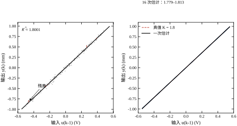
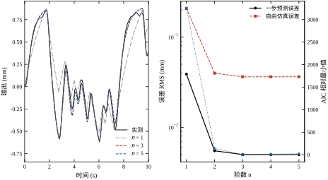
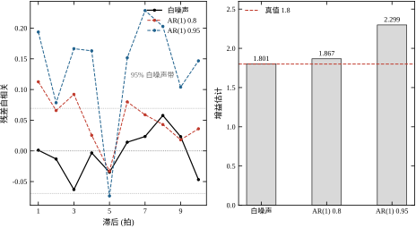
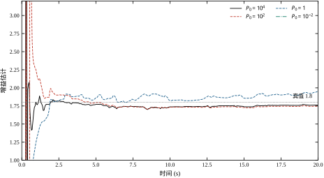
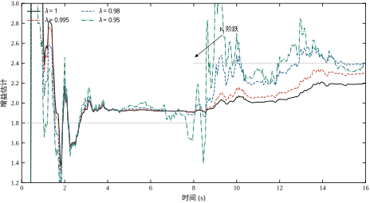
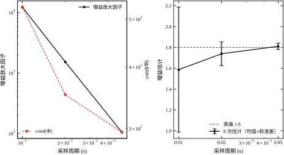

第 17 章把一段实验数据做成了一条曲线。曲线回答的是“输入动一下，输出怎么走”，它不假设阶数、不假设噪声进来，因此几乎不会错；但它也几乎不能用来做别的事。现场把这条曲线交给控制器设计者，对方第一个问题通常是：“给我一个能算的模型，我要在 2 s 的采样周期上做预测。”曲线答不上来。
从曲线到系数，就是参数辨识要做的事。本章只讲这一族方法里最基础的一支：最小二乘（least squares，LS）及其递推形式（recursive least squares，RLS）。它们不是最好的方法——后面第 19 章会用工具变量和极大似然去修它们的偏差，第 20 章会用子空间方法绕开阶数——但它们是所有方法的坐标系：任何一个参数辨识结果，最终都会被折算成一组 \hat\theta，而判断这组 \hat\theta 靠不靠谱的语言，全部来自最小二乘的误差分析。
第一处是外推。 非参数曲线只在激励覆盖到的工况上有效。第 17 章实验 1 里，0.02 V 幅值的阶跃只把对象推了 0.91 mm，0.4 V 推了 1.76 mm。如果产线后来要求走 3 mm 的行程，那么每 0.1 mm 对应多少伏，只能从这两条曲线的斜率去猜；一旦对象在大行程处出现饱和或死区变化，猜出来的斜率就是错的，而且错得没有任何征兆——因为曲线本身没有“参数”这个概念，也就没有“参数在别的工况下会变”这个警告。
第二处是结构。 曲线不能回答“这个对象是几阶”。第 17 章 §17.1.3 说过，从一个阶跃响应的最初十毫秒能看出三阶的指纹，但那是定性判断。真要把模型交给一个需要状态空间的算法（比如第 58 章和第 80 章的预测控制），就必须把曲线拟合成 n 个极点、m 个零点，并给出每个极点的置信区间。曲线本身不含这个信息，它只含“第几秒到多少毫米”。
第三处是接口。 全书后面所有控制器的设计公式，输入都是系数而不是曲线：PID 整定要用增益和时间常数（第 44 章），Smith 预估要用延迟和主导极点（第 47 章），内模控制要用模型的逆。这些公式里没有一项能直接吃一条 4096 点的阶跃响应。所以哪怕只是为了“能对接”，也必须把曲线压成一组数。
这三处不够用，指向同一个结论：非参数结果是验收集，参数模型才是交付物。 第 17 章反复强调“先非参数、后参数”，说的不是非参数更准，而是非参数更不容易错——它没有可错的自由度。一旦有了这条不会错的参照，就可以放心地去拟合一个会错的模型，并用两者的差来判断错在哪里。
参数辨识的方法很多，把最小二乘放在第一位，有三个不走运但很硬的理由。
它是唯一有闭式解的。 给定数据矩阵 \Phi 和输出向量 Y，最小二乘的解是
\hat\theta=(\Phi^{\top}\Phi)^{-1}\Phi^{\top}Y \tag{18-1}
一行公式，不需要迭代，不需要初值，不需要调步长。这意味着两件事：一是它给出的结果是确定的，同一批数据跑两遍必然一样，可作为后面所有迭代法的对照基准；二是它的误差可以解析地写出来，而不必靠蒙特卡洛去试。
它是所有迭代法的第一拍。 第 19 章的极大似然、第 20 章的子空间、第 21 章的闭环辨识，几乎都把最小二乘的解当作初值。原因是这些方法的目标函数在最优点附近近似二次型，而最小二乘给的正是这个二次型的中心。初值选在这里，迭代三五步就收敛；初值选偏了，可能要几十步，甚至收敛到局部极小。所以哪怕最终不用 LS，也必须会算 LS。
它的偏差结构最清楚。 最小二乘什么时候准、什么时候偏，可以精确地写成一句话：回归向量与噪声不相关时无偏，相关时有偏。 这句话的证明只有三行（§18.3.2），但它解释了工程上绝大多数“模型在训练集上很准、换一批数据就不准”的现象。后面所有改进方法，本质上都是在想办法让这句话重新成立——工具变量换一个与噪声无关的回归向量，极大似然换一个把噪声相关性写进目标的准则。
用一句话概括本章的定位：最小二乘不是终点，它是度量其他方法好坏的尺子。
在写公式之前，有三件事必须先钉死，否则后面每一个数字都会被误读。
第一，辨识用的采样周期不等于控制用的采样周期。 本章全部实验用 T_s=0.05 s，是对象主导时间常数 0.5 s 的十分之一；而第 17 章的仿真用的是 0.01 s。之所以放慢，是因为 0.01 s 下 1+\sum a_i=0.00045，分母几乎抵消，增益估计会被噪声彻底带偏（§18.6.6 会给出 −66.99% 的实测）。这个选择不是“精度更高”，而是“条件数更讲理”。
第二，本章的数据是按方程误差结构生成的。 也就是
y_k=-\sum_{i=1}^{n_a}a_i y_{k-i}+\sum_{j=1}^{n_b}b_j u_{k-n_k-j+1}+e_k \tag{18-2}
噪声 e_k 直接加在方程右端，而不是加在对象输出端。这两种加法在数学上只差一个位置，在结论上差别巨大：方程误差下白噪声的 LS 是无偏的（本章实测偏差 +0.08%），输出误差下白噪声的 LS 也是有偏的。教学上必须从方程误差起步，否则第一句话就站不住。真实的传感器噪声更接近输出误差，这个落差会在 §18.3.3 和 §18.5.1 反复交代。
第三，本章的“真值”是一个已知的三阶对象。 与第 16、17 章同一个：
G(s)=\frac{1.8}{(0.5s+1)(0.12s+1)(0.03s+1)}e^{-0.04s} \tag{18-3}
按 T_s=0.05 s 零阶保持离散，纯延迟折成 n_k=1 拍，ARX 结构取 n_a=3、n_b=3，真值参数为
\theta^{\ast}=[-1.752954,\;0.891922,\;-0.112665,\;0.012576,\;0.030521,\;0.004248]^{\top} \tag{18-4}
这六个数是本章所有表格的参照。注意它们的量级差得很远：a_1 是 1.75，b_3 是 0.0042，相差 400 倍。这个量级差本身就是一个警告——它意味着“每个参数都估准”是一个远比“增益估准”苛刻的要求。
场景一：老设备的“再整定”。 一台运行了八年的液压位置伺服，机械磨损让阻尼变了，原来的控制器参数开始振荡。此时不可能拆机重做阶跃测试，只能在正常节拍里采集指令与位置。这类数据的问题不是噪声大，而是输入几乎不变：每一段的指令都来自同一个轨迹，回归向量在参数空间里只覆盖了一条很窄的方向。此时 LS 能给出一个解，但解只在这个方向上是确定的，垂直方向的参数组合完全靠噪声决定。§18.6.6 的阶数表会显示，n=4 与 n=5 的增益估计几乎一样（1.8207 与 1.8218），但条件数从 5.063e+02 涨到 6.470e+02——多出来的两个参数没有信息支撑，只是在吃噪声。
场景二：批量生产的“一模一件”。 注塑机的每一模都是一次天然的阶跃：保压压力一跳，模腔压力跟着走。这类数据量极大（一天几千模），但每一模的初始状态不同、料温在漂。把几千模的数据拼成一个回归矩阵，LS 会把“料温漂移”误当成“对象参数变了”，估出来的增益在一天之内单调下降。正确做法是先按模次做差分，把慢漂移除掉，再合并；这一步在 §18.4.1 会给具体算法。
场景三：在线自适应。 一台机械臂的负载随抓取物变化，控制器需要在几秒内更新模型。此时不能用批 LS——它要求把整段数据存下来重算，而数据每 0.05 s 增加一行。必须用递推形式，每来一个样本更新一次。§18.6.4 会给出四种初值的收敛轨迹：P_0=10^4 时增益 0.85 s 进 2%，而 P_0=10^{-2} 时跑完 20 s 还差 70.76%。初值选错，自适应就变成了“永远学不会”。
三个场景对应三种数据条件：输入激励不足、慢漂移混入、要求在线更新。它们恰好是本章三块内容（偏差分析、预处理、RLS）各自的主场。
一个常见的说法是：“模型差点没关系，闭环会修。”这句话对一半，错一半，而错的那一半恰好决定了辨识该做到什么精度。
能被反馈吃掉的是增益误差。 控制器里有积分环节时，稳态误差会被压到零，增益偏 20% 只影响动态过程的快慢，不影响最终停在哪里。这就是为什么很多现场设备用着不准的模型也能跑——积分器在兜底。
不能被反馈吃掉的是相位误差。 延迟估错、极点位置估错，都会直接改变开环相位。相位裕度是按模型算的，模型说 45°、实际只有 15°，闭环就会振荡。积分器对此无能为力，因为它只在低频起作用，而相位误差通常出现在穿越频率附近。
最麻烦的是“看起来能跑”的中间地带。 增益偏 30% 配上保守的控制器，响应慢一点，操作工不会抱怨；直到某天换了批料、负载变了，裕度掉到零，系统突然振荡。此时回头查，模型是三个月前辨识的，偏差一直在，只是被工况掩盖了。
这条区分给出辨识的精度分配原则：相位相关的量（延迟、极点）要做准，增益可以宽一点。 本章的实验设计正是按这个原则：实验 0 花力气讨论为什么六个参数都估不准但增益只差 4.55%，是因为增益本来就不需要那么准；实验 5 花大力气讨论采样周期，是因为采样周期直接决定极点位置，而极点位置决定相位。
§18.2 给定义：ARX 模型、回归形式、四种误差结构、辨识三要素。§18.3 做推导：正规方程、无偏性证明、偏差的三种来源、参数协方差、RLS 递推、遗忘因子、条件数与增益放大因子的关系、AIC 与阶数选择。§18.4 讲实现：数据预处理、批 LS 的数值稳定写法、RLS 的工程细节、异常值与饱和的处理。§18.5 讲边界：什么条件下可信、闭环数据的坑、时变对象、交付物该包含什么。§18.6 用六个实验把上述结论逐个量化，每个数字都能由 ch018_sim.py 复算。§18.7 给决策流程、常见错误表和与后续章节的接口。
全章围绕一个判断：这组系数，是对象的性质，还是数据的性质。 最小二乘永远会给出一个解，哪怕数据里根本没有信息；能不能看出这个解是“算出来的”还是“编出来的”，是本章要训练的核心能力。
把式 (18-2) 写成矩阵形式，就是本章的基本方程：
y_k=\varphi_k^{\top}\theta+e_k,\qquad \varphi_k=[-y_{k-1},\dots,-y_{k-n_a},\,u_{k-n_k},\dots,u_{k-n_k-n_b+1}]^{\top} \tag{18-5}
其中 \theta=[a_1,\dots,a_{n_a},b_1,\dots,b_{n_b}]^{\top}。n_a 是极点个数，n_b 是零点个数加一，n_k 是纯延迟拍数。三个整数加一个向量，就是这个模型的全部。
这个结构叫 ARX，三个字母分别对应自回归（AR）、外生输入（X）和方程噪声。它的名字已经说明了噪声的位置：噪声和回归项是相加关系，处在同一个方程里，而不是在方程外面再套一层。
n_b=n_z+1 这个“+1”容易被记错。原因是 q^{-1} 形式的分子是 b_1q^{-1}+b_2q^{-2}+\dots，它从 q^{-1} 开始，而 q^{-1} 项对应的是 u_{k-1}。把公因子 q^{-1} 提出来，剩下的才是真正的零点多项式，它的阶数等于零点个数。所以“从 u_k 到 y_k 有 n_b 个系数”与“分子有 n_z=n_b-1 个零点”是同一件事。本章 n_b=3，对应两个有限零点——这与三阶对象“三个极点、没有有限零点”并不矛盾，因为离散化会在分子里引入与极点配对的零点。
n_k 的定义也有一个约定问题。本章取 n_k=\mathrm{round}(L/T_s)=1，意味着 u_{k-1} 是第一个对 y_k 有影响的输入。若把 n_k 定义成“延迟拍数加一”，同样的物理延迟会写成 2，两种写法都有人用。读别人的代码时，第一件事是确认 n_k 的约定，否则整套参数都会错位一拍。 这是协作中最常见的低级错误，也是最难发现的一类——因为估出来的模型在训练数据上仍然拟合得很好。
把 N 个样本堆起来：
Y=\Phi\theta+E,\qquad \Phi=\begin{bmatrix}\varphi_{k_0}^{\top}\\ \vdots\\ \varphi_{N}^{\top}\end{bmatrix},\quad Y=\begin{bmatrix}y_{k_0}\\ \vdots\\ y_{N}\end{bmatrix} \tag{18-6}
其中 k_0=\max(n_a,\,n_k+n_b-1) 是第一个能凑齐回归向量的时刻。这个下标不起眼，但它决定了“用多少个样本”——如果 n_a=3、n_k=1、n_b=3，则 k_0=3，前三个样本必须丢掉。丢掉的这三个样本在长记录里无所谓，在短记录里就是 10% 的数据。
同一个式 (18-1)，可以从三个完全不同的角度得到，每一种都对应一种工程直觉。
几何读法：投影。 Y 是 N 维空间里的一个点，\Phi 的每一列是一个方向。\Phi\hat\theta 是 Y 在 \Phi 的列空间上的正交投影，残差 Y-\Phi\hat\theta 垂直于这个列空间。所以最小二乘做的事情是：在模型能表达的所有输出里，找一个离实测最近的。 图 18-1 左图给的就是这个图像在二维情形下的样子——散点是一堆观测，直线是列空间，竖直的虚线段是残差，最小二乘让这些虚线段的长度的平方和最小。

统计读法：最小方差线性无偏估计。 如果噪声零均值、同方差、互不相关，那么在所有 \theta 的线性无偏估计里，最小二乘的方差最小（Gauss-Markov 定理）。注意这个定理的条件：它不要求噪声是高斯分布，只要求二阶矩结构对。这一点在工程上很重要——真实噪声很少是高斯，但只要它近似白、近似同方差，LS 就仍然是“线性无偏里最好的”。
概率读法：极大似然。 如果 e_k\sim\mathcal{N}(0,\sigma^2) 独立同分布，那么似然函数是
p(Y\mid\theta)=\prod_{k}\frac{1}{\sqrt{2\pi}\sigma}\exp\left(-\frac{(y_k-\varphi_k^{\top}\theta)^2}{2\sigma^2}\right) \tag{18-7}
取对数、对 \theta 求极大，等价于最小化 \sum(y_k-\varphi_k^{\top}\theta)^2。所以高斯白噪声下，最小二乘就是极大似然。 这句话反过来读更有用：当噪声不是高斯白噪声时，最小二乘就不再是极大似然，也就失去了“渐近有效”这个性质——这正是第 19 章要处理的缺口。
三种读法给出同一个公式，但给出三种不同的失败预警：几何读法警告“列空间太窄”（激励不足），统计读法警告“二阶矩不对”（噪声有色），概率读法警告“分布假设不成立”（异常值）。§18.5 会把这三条预警逐一展开。
ARX 只是四种常见结构之一。它们的区别全在“噪声从哪里进来”，而这一点决定了 LS 是否有偏。
表 18-1 四种误差结构与 LS 的适用性
| 结构 | 方程 | 噪声位置 | 白噪声下 LS | 典型场景 |
|---|---|---|---|---|
| FIR | y_k=\sum b_j u_{k-j}+e_k | 方程 | 无偏 | 有限脉冲响应、自适应滤波 |
| ARX | y_k=-\sum a_i y_{k-i}+\sum b_j u_{k-j}+e_k | 方程 | 无偏 | 采样快、噪声小、教学基准 |
| ARMAX | A y_k=B u_k+C e_k | 方程，经 C 整形 | 有偏 | 噪声有色但可建模 |
| OE | y_k=\dfrac{B}{A}u_k+e_k | 对象输出 | 有偏 | 传感器噪声主导 |
表里“白噪声下 LS”这一列是本章的骨架。FIR 与 ARX 的噪声与回归向量无关（FIR 的回归向量只含 u，ARX 的回归向量含 y，但 y_{k-i} 里的 e_{k-i} 与当前的 e_k 无关），所以无偏；ARMAX 的噪声经过 C(q^{-1}) 整形后，y_{k-i} 里含有 e_{k-i} 的滤波结果，与 e_k 相关，所以有偏；OE 的噪声直接加在输出上，y_{k-i} 里含 e_{k-i}，同样有偏。
这里有一个容易被忽略的细节：ARX 的“无偏”依赖于 e_k 是白的。一旦 e_k 有色，y_{k-i} 里的 e_{k-i} 与 e_k 就相关了，无偏性立刻失效。§18.6.3 会用 \rho=0.95 的 AR(1) 噪声把增益从 1.8 推到 2.2986，偏差 +27.70%。
任何一次参数辨识，都由三个选择构成，缺一不可：
三者之中，结构是最容易被忽视的。现场工程师往往把注意力放在“用哪个算法”，而真实项目里 80% 的失败来自结构选错：把纯延迟当成极点、把积分环节当成大时间常数、把执行器死区当成对象非线性。§18.5.2 会给一份结构自检清单。
式 (18-8) 对每个样本一视同仁。如果噪声方差不一样（异方差），或者我们更关心某些样本，就应该给样本加权：
J_W(\theta)=(Y-\Phi\theta)^{\top}W(Y-\Phi\theta) \tag{18-8a}
W 是正定权矩阵。令梯度为零，得
\hat\theta_W=(\Phi^{\top}W\Phi)^{-1}\Phi^{\top}WY \tag{18-8b}
当 W=\Sigma^{-1}（\Sigma 是噪声协方差）时，这就是马尔可夫估计，方差最小。这条公式比式 (18-1) 更一般，普通 LS 是 W=I 的特例。
加权在工程上有三个用途。一是异方差：传感器在大信号段噪声大、小信号段噪声小，按方差的倒数加权能让大噪声样本少说话。二是去趋势：把 W 取成差分矩阵的转置乘自身，等价于对差分后的数据做 LS，这就是 §18.4.1 的去趋势。三是抗野点：把野点对应的权设为零，等价于剔除，但不用改变矩阵维度。
广义最小二乘（GLS）走得更远：它假设噪声是有色的，E 的协方差是 \sigma^2\Sigma，\Sigma 未知。做法是两步迭代：先用普通 LS 估 \theta，从残差估出 \Sigma，再用 W=\hat\Sigma^{-1} 重估 \theta，如此往复。这实际上是在逼近极大似然，第 19 章会给出更直接的写法。本章提它，是因为它揭示了一个重要的思路：偏差可以通过“对噪声建模”来修，而不一定要换回归向量。 工具变量和 GLS 是两条不同的路，前者换回归量，后者换权矩阵。
GLS 的局限是它要求 \Sigma 的结构已知（通常假设噪声是 AR 过程，阶数已知）。若噪声的谱形状复杂，估 \Sigma 本身就是一个难题，迭代可能不收敛。工程上更常用的是 ARMAX 结构，因为它把噪声模型和对象模型放在一起估，避免了两步迭代的不稳定。
§18.3.1 说“\Phi 列满秩”是解存在的条件。这个条件在统计上有一个更精确的版本：持续激励（persistent excitation，PE）。
定义：输入序列 \{u_k\} 是 n 阶持续激励的，若存在 \alpha>0 使得对任意非零的 n 维向量 c，
\frac{1}{N}\sum_{k=1}^{N}\left(\sum_{i=1}^{n}c_i u_{k-i}\right)^2\ge\alpha \tag{18-8c}
用大白话说：任何 n 个相邻输入的线性组合，都不能恒为零。 这排除了“输入只在少数几个方向上变化”的情形。
阶数与模型阶数的关系是：ARX 模型要可辨，输入至少要是 n_a+n_b 阶持续激励的。原因很直观：模型有 n_a+n_b 个待估参数，每个参数对应回归空间的一个方向，输入必须把这 n_a+n_b 个方向都激励到。本章实验 1 用 PRBS，钟周期 5 拍，PRBS 的阶数足够高，所以 n=5 时仍能解出（虽然 AIC 说不用那么高）；实验 0 用单个阶跃，只在“阶跃”这一个方向上激励，所以只有增益可辨，其余五个参数的相对标准差从 4.3% 到 96.5% 不等。
信息矩阵（Fisher information matrix）把这件事量化。对高斯噪声，\mathcal{I}(\theta)=\Phi^{\top}\Phi/\sigma^2，它的特征值就是“每个参数方向上信息的多少”。克拉美-罗下界说，任何无偏估计的协方差都不小于 \mathcal{I}^{-1}，即
\mathrm{Cov}(\hat\theta)\succeq\sigma^2(\Phi^{\top}\Phi)^{-1} \tag{18-8d}
LS 在高斯白噪声下恰好达到这个下界，这是它“最优”的确切含义。而在有色噪声下，LS 达不到下界——差距就是偏差那部分，第 19 章的极大似然能达到。
信息矩阵还有一个实用价值：它给出“加多少数据才能把标准差降一半”的答案。\Phi^{\top}\Phi 随样本数线性增长，所以标准差按 1/\sqrt{N} 下降。要把相对标准差从 4.3% 降到 2%，样本数要翻四倍。这条规律在安排实验时长时很有用——如果当前精度不够，先算一下需要多少倍的记录长度，再决定值不值得重新做实验。
任何估计误差都可以拆成两半：
\mathbb{E}\left[(\hat\theta-\theta^{\ast})^2\right]=\underbrace{\left(\mathbb{E}[\hat\theta]-\theta^{\ast}\right)^2}_{\text{偏差}^2}+\underbrace{\mathrm{Var}(\hat\theta)}_{\text{方差}} \tag{18-8e}
这两项随模型复杂度的变化方向相反。阶数越高，模型能表达的对象越多，偏差越小；但参数越多，每个参数的方差越大。总误差是一个 U 形曲线，最低点在两者平衡处。
本章有两组数据可以把这个 U 形画出来。偏差那一半看表 18-4 的增益：n=1 偏 +65.29%，n=2 偏 −3.04%，n=3 偏 +0.08%，n=4 偏 −0.07%，n=5 偏 −0.62%。从 n=1 到 n=3，偏差掉了三个数量级；从 n=3 往上，偏差基本不动（都在 1% 以内）。方差那一半看表 18-10 的条件数：n=1 是 1.340e+00，n=3 是 2.950e+02，n=5 是 6.470e+02。条件数涨，方差跟着涨，因为 \mathrm{Cov}(\hat\theta)=\sigma^2(\Phi^{\top}\Phi)^{-1}。
把两半合起来：n=1 偏差大、方差小，总误差由偏差主导；n=5 偏差小、方差大，总误差由方差主导；n=3 在中间，两项都小。这就是 AIC 选出 n=3 的几何含义——AIC 的 2p 项本质上是在估计方差那一半。
这个视角解释了一个常见的困惑：“为什么加了数据，参数反而变了？”答案是方差那一半在起作用：换一批噪声，\hat\theta 会在这个方差的范围内跳动。n=3 时 16 个种子的增益标准差是 0.0258，意味着换一批数据，增益可能从 1.76 跳到 1.84。若模型是 n=5，这个跳动会更大。
工程上的应对不是“消掉方差”（消不掉），而是把方差算出来，写进交付物。§18.3.4 的协方差公式就是干这个的。一个报告写“K=1.80”和写“K=1.80\pm0.03”，对使用者的意义完全不同：前者让人以为这是精确值，后者让人知道该留多少裕度。
表 18-1 里的四种结构，只有 FIR 和 ARX 能用一次线性最小二乘解出来。这不是巧合，需要说清楚，因为它决定了后面几章的方法为什么必须迭代。
看 ARMAX：A(q^{-1})y_k=B(q^{-1})u_k+C(q^{-1})e_k。把 e_k 解出来：
e_k=\frac{A(q^{-1})y_k-B(q^{-1})u_k}{C(q^{-1})} \tag{18-8f}
这个式子里 e_k 依赖于过去的 e_{k-i}，而 e_{k-i} 又依赖于参数 c_i。所以“给定参数能算残差”这件事本身就需要先知道参数——这是一个隐式方程，不能写成 y=\Phi\theta+e 的线性形式。要估它，只能迭代：先猜一组 c_i，算残差，再更新，直到收敛。这就是第 19 章的 PEM（预测误差方法）。
OE 结构更麻烦：y_k=\frac{B}{A}u_k+e_k，噪声在输出端，预测器是 A^{-1}B，它对参数是非线性的（分母含参数）。所以 OE 的估计也是迭代的。
ARX 之所以线性，是因为它的噪声项直接是 e_k，没有经过滤波器。把 A(q^{-1})y_k 移到右边，y_k 就是“过去的 y 与现在的 u 的线性组合加 e_k”，回归向量里全是已知量。这个“噪声不过滤”的简化，换来的是线性；代价是它假设噪声就长这样，一旦真实噪声不是白的，模型就偏。
这条权衡可以总结成一张表：
表 18-2a 四种结构的估计代价
| 结构 | 是否线性 | 求解方式 | 一致性条件 |
|---|---|---|---|
| FIR | 是 | 一次 LS | 噪声白、n_b 足够 |
| ARX | 是 | 一次 LS | 噪声白 |
| ARMAX | 否 | 迭代 PEM | 噪声可被 C 建模 |
| OE | 否 | 迭代 PEM | 噪声与输入无关 |
从 ARX 到 ARMAX/OE，是“用计算量换一致性”。工程上选哪个，取决于噪声有多强、计算资源有多少。本章用 ARX 是因为它是理解偏差的起点；真实项目里，若噪声明显有色，直接上 ARMAX 或 OE 更省事，不必先用 ARX 再修。
还有一条实践上的细节：ARMAX 的迭代需要一个初值，而 ARX 的解正好可以当这个初值——把 ARX 估出的 a_i、b_j 填进去，c_i 初值取零，PEM 通常几步就收敛。这就是 §18.1.2 说的“LS 是所有迭代法的第一拍”的具体用法。
把准则写成
J(\theta)=\|Y-\Phi\theta\|^2=Y^{\top}Y-2\theta^{\top}\Phi^{\top}Y+\theta^{\top}\Phi^{\top}\Phi\theta \tag{18-8}
对 \theta 求梯度并令其为零：
\nabla J=-2\Phi^{\top}Y+2\Phi^{\top}\Phi\theta=0 \quad\Longrightarrow\quad \Phi^{\top}\Phi\,\hat\theta=\Phi^{\top}Y \tag{18-9}
这就是正规方程（normal equations）。当 \Phi^{\top}\Phi 可逆时，解为式 (18-1)。
可逆的条件是 \Phi 列满秩，也就是回归向量在各个方向上都有变化。这个条件在数值上对应条件数有限，在物理上对应“激励充分”。两者是同一件事的两种说法：激励不足时，某些参数组合对输出的影响几乎为零，\Phi 的对应方向接近零向量，\Phi^{\top}\Phi 的特征值就趋近于零，求逆会把噪声放大成任意大的数。
正规方程有一个不太直观的性质：它的条件数是 \Phi 条件数的平方。 所以直接对 \Phi^{\top}\Phi 求逆，在 \mathrm{cond}(\Phi)=10^4 时会面对 10^8 的条件数，双精度下已经丢掉一半有效位。§18.4.2 会给出用 QR 分解绕开这一步的写法。这不是“更优雅”，而是必需——本章实验 0 的无噪声数据条件数就是 1.149e+04。
把真实模型 Y=\Phi\theta^{\ast}+E 代入式 (18-1)：
\hat\theta=\theta^{\ast}+(\Phi^{\top}\Phi)^{-1}\Phi^{\top}E \tag{18-10}
两边取期望：
\mathbb{E}[\hat\theta]-\theta^{\ast}=(\Phi^{\top}\Phi)^{-1}\,\mathbb{E}[\Phi^{\top}E] \tag{18-11}
所以无偏的充要条件是 \mathbb{E}[\Phi^{\top}E]=0，即回归矩阵的每一列都与噪声正交。写成样本形式是 \frac{1}{N}\sum_k\varphi_k e_k\to 0。
这个条件在 ARX 结构下能不能成立，取决于 e_k 是不是白的：
这就是一句话结论的全部证明。它值得反复看，因为在工程上它等价于一个可以现场执行的检查：算完 LS，把残差拿去做自相关；如果一阶自相关系数显著不为零，那么这个解就是有偏的。 §18.6.3 会给出这条检查的量化门槛：N=800 时，白噪声的一阶自相关应在 \pm1/\sqrt{N}=\pm0.0354 以内；实测 \rho=0.95 那一组的残差一阶自相关是 0.194，超出五倍。
偏差不是一种东西，而是三种不同的机制，处理方式完全不同。
第一种：噪声有色。 上面的推导已经说清。它的特征是残差自相关显著、Durbin-Watson 统计量明显小于 2。修法是换结构（ARMAX、OE）或换方法（工具变量、极大似然，见第 19 章）。注意提高阶数不能修掉这种偏差：§18.6.3 里把阶数从 3 提到 4，残差一阶自相关从 0.194 降到 0.018（残差变白了），但增益从 2.2986 变成 1.8473，仍然偏离真值 2.6%。残差变白只说明“模型把噪声的相关性也拟合进去了”，不说明“参数回到了真值”。
第二种：闭环相关。 对象在闭环下运行时，u_k 由 y_k 反馈算出，因此 u_k 与 e_k 天然相关。此时 \mathbb{E}[\Phi^{\top}E]\neq0，哪怕噪声是白的。这种偏差的可怕之处在于它不会被残差检查发现——残差可以很白，参数却偏得很远。第 21 章会专门处理闭环辨识，本章只在 §18.5.2 给出识别方法：看输入与残差是否相关，而不是看残差本身。
第三种：结构失配。 真实对象有死区、饱和、摩擦，模型里没有。这些非线性会把一部分输入能量“吃掉”或“放大”，等效于在回归方程里加了一个与 u 相关的误差项。本章实验 0 的 5 μm 噪声组就同时含死区与饱和，结果增益 1.7181，偏差 −4.552%。这个偏差在残差上表现不出来（残差 RMS 0.004850，与噪声标准差 0.005 几乎一样），因为死区造成的误差与噪声同量级，混在一起看不出来。
三种偏差的识别手段完全不同，见表 18-2。
表 18-2 三种偏差的识别与处理
| 来源 | 残差自相关 | 输入-残差相关 | 提高阶数是否有效 | 处理 |
|---|---|---|---|---|
| 噪声有色 | 显著 | 不显著 | 否（只变白，不消偏） | ARMAX/OE、工具变量、ML |
| 闭环相关 | 可能不显著 | 显著 | 否 | 第 21 章闭环方法 |
| 结构失配 | 不显著 | 可能显著 | 部分（用高阶凑） | 补非线性环节、分段建模 |
这张表最实用的一行是“提高阶数是否有效”。现场最常见的错误反应是“模型不准就加阶数”，而三种偏差里只有第三种能靠加阶数缓解，前两种加了只会让参数更分散。
在式 (18-10) 的基础上，若 E 的协方差为 \sigma^2I，则
\mathrm{Cov}(\hat\theta)=\sigma^2(\Phi^{\top}\Phi)^{-1} \tag{18-12}
\sigma^2 用残差估计：\hat\sigma^2=\|Y-\Phi\hat\theta\|^2/(N-p)，p=n_a+n_b 是参数个数。开方得到每个参数的标准差，2\hat\sigma_{\theta_i} 就是 95% 置信区间的半宽。
这条公式在工程上有两个用法，第二个比第一个重要。
用法一：给出参数的精度。 本章实验 0 的 5 μm 噪声组，a_1 的相对标准差是 4.3%，b_1 是 96.5%。前者说明 a_1 估得还算稳，后者说明 b_1 几乎没估出来——虽然它的点估计是 0.021092（真值 0.012576，误差 +67.72%），但置信区间宽到 [-0.0025,\,0.0446]，跨过零两次。一个相对标准差 96.5% 的参数，等于没有估。
用法二：判断哪些参数组合是可辨的。 单看每个参数的标准差会漏掉一类问题：两个参数各自都很准，但它们的差很不准，因为二者强相关。这时要看协方差矩阵的特征值。特征值最小的方向就是“最不可辨”的参数组合。对于阶跃数据，这个方向几乎总是“分子系数的组合”——因为阶跃只激励了低频，高频段的零点位置对输出几乎没有影响。这也是为什么本章反复强调“增益比参数可靠”：增益是分子系数之和除以分母系数之和，它是一个低频量，恰好落在阶跃数据最有信息的方向上。
批 LS 每次都要重算 (\Phi^{\top}\Phi)^{-1}，数据一多就无法在线用。RLS 的做法是把它改写成“新息修正”的形式。
记 P_k=(\Phi_k^{\top}\Phi_k)^{-1}，其中 \Phi_k 是前 k 个样本组成的回归矩阵。加入第 k+1 个样本后，
P_{k+1}^{-1}=P_k^{-1}+\varphi_{k+1}\varphi_{k+1}^{\top} \tag{18-13}
用矩阵求逆引理（Sherman-Morrison）展开：
P_{k+1}=P_k-\frac{P_k\varphi_{k+1}\varphi_{k+1}^{\top}P_k}{1+\varphi_{k+1}^{\top}P_k\varphi_{k+1}} \tag{18-14}
定义增益向量
K_{k+1}=\frac{P_k\varphi_{k+1}}{1+\varphi_{k+1}^{\top}P_k\varphi_{k+1}} \tag{18-15}
则参数更新为
\hat\theta_{k+1}=\hat\theta_k+K_{k+1}\left(y_{k+1}-\varphi_{k+1}^{\top}\hat\theta_k\right) \tag{18-16}
括号里那一项是新息（innovation）：实测输出减去用旧参数预测的输出。整个 RLS 就是“按新息的大小和方向修正参数”，K 决定修正多少。
式 (18-15) 的分母 1+\varphi^{\top}P\varphi 永远大于 1，所以 K 的范数随 P 收缩而衰减。这解释了 RLS 的收敛：P 的迹从初值 P_0 单调下降，修正量随之变小，参数逐渐“冻结”。§18.6.4 会给出这条曲线的四个版本：P_0=10^4 时 P 的迹末值是 3.593e+02，P_0=10^{-2} 时只剩 4.249e-02，后者已经小到几乎不再更新。
式 (18-13) 把所有历史样本等权看待，因此它估的是“整段数据的平均参数”。对象参数变了，RLS 要很久才能跟上。遗忘因子的做法是给旧数据乘一个衰减：
P_{k+1}^{-1}=\lambda P_k^{-1}+\varphi_{k+1}\varphi_{k+1}^{\top},\qquad 0<\lambda\le1 \tag{18-17}
对应的更新式只比分母多一个 \lambda：
P_{k+1}=\frac{1}{\lambda}\left(P_k-\frac{P_k\varphi_{k+1}\varphi_{k+1}^{\top}P_k}{\lambda+\varphi_{k+1}^{\top}P_k\varphi_{k+1}}\right) \tag{18-18}
\lambda 的物理含义是“等效记忆长度”。令 \lambda^{M}=e^{-1}，得
M\approx\frac{1}{1-\lambda} \tag{18-19}
\lambda=0.98 对应 M=50 拍，在 T_s=0.05 s 下是 2.5 s；\lambda=0.95 对应 20 拍，即 1 s。这个窗口决定了“多久以前的数据还算数”。
\lambda 的选择是一个纯粹的折中，没有最优值。\lambda 越接近 1，稳态方差越小、跟踪越慢；越小，跟踪越快、稳态抖动越大。§18.6.5 的实测把这个折中量化成一张表：\lambda=1 时切换后 2 s 的增益误差是 −15.80%，末端标准差 0.0600；\lambda=0.98 时误差降到 −4.21%，标准差升到 0.0664；\lambda=0.95 时误差变成 +6.33%（过冲），标准差升到 0.1195。误差从负到正穿过零点的那一档，就是“跟踪速度刚好够”的那一档。
还有两个工程细节必须提。第一，\lambda<1 会让 P 指数增长，若某段时间输入恒定（回归向量为零），P 会涨到溢出，工程上叫“协方差爆炸”（covariance windup）。标准做法是设一个 P 的迹上限，或者加死区：|y-\varphi^{\top}\hat\theta|<\epsilon 时不更新。第二，\lambda 不能太小：M 小于参数个数的 5 倍时，\Phi^{\top}\Phi 的有效秩不够，估计会剧烈震荡。p=6 时，\lambda 不应低于 1-1/30\approx0.967。
条件数 \mathrm{cond}(\Phi)=\sigma_{\max}/\sigma_{\min} 是数值线性代数里的标准指标，但它在辨识里会骗人。本章实验 5 给了一个反例：T_s=0.05 s 时条件数 2.950e+02，增益误差 +1.17%；T_s=0.01 s 时条件数 5.289e+02，只大不到一倍，增益误差却是 −66.99%。条件数只差 1.8 倍，误差差了 57 倍。
原因在分母的抵消。离散模型的直流增益是
K=\frac{\sum_j b_j}{1+\sum_i a_i} \tag{18-20}
当 T_s\to0 时，所有 a_i\to 离散极点靠近 1，\sum a_i\to-1，分母趋近于零。定义增益放大因子
\kappa_K=\frac{\sum_i|a_i|}{\left|1+\sum_i a_i\right|} \tag{18-21}
它衡量“分母的绝对误差被放大多少倍变成增益的相对误差”。实测：T_s=0.01 时 \sum|a_i|=5.526、1+\sum a_i=0.00045，\kappa_K=12313.8；T_s=0.05 时 \sum|a_i|=2.758、1+\sum a_i=0.02630，\kappa_K=104.8；T_s=0.2 时 \kappa_K=3.7。
所以真正的指标不是 \mathrm{cond}(\Phi)，而是 \mathrm{cond}(\Phi)\times\kappa_K。前者说“回归矩阵病不病”，后者说“病的部分会不会传到增益上”。T_s=0.01 那一组，条件数只涨了 79%，放大因子却涨了 117 倍，乘积涨了两个数量级——这才是 −66.99% 的来源。
这条结论有一个直接的工程推论：辨识用的采样周期不能照抄控制用的采样周期。 控制要快采样是为了相位裕度，辨识要慢采样是为了让分母不抵消。经验值是 T_s 取主导时间常数的 1/10 到 1/20，本章取 0.05 s（0.5/10）。再快就要用 §18.4.5 的频域加权或连续时间辨识，而不是硬扛。
阶数 n 越高，残差平方和越小——这是必然的，因为高階模型包含低阶模型作为特例。所以“残差最小”不能用来选阶数。常用的修正是 AIC：
\mathrm{AIC}=N\ln\left(\frac{\|Y-\Phi\hat\theta\|^2}{N}\right)+2p \tag{18-22}
第一项奖励拟合，第二项惩罚参数个数 p=n_a+n_b。取最小值即为所选阶数。
AIC 的推导来自信息论：它估计的是“用这个模型去预测新数据时的信息损失”。2p 这一项不是随手加的，它等于 \chi^2_p 分布的期望，也就是“多出来的 p 个参数平均能把残差平方和压低多少”。所以 AIC 的比较是公平的：它已经扣掉了“加参数必然带来的一点好处”。
本章实验 1 给了一个教科书式的例子。同样一段 PRBS 数据，扫 n=1 到 5：
三个指标给出三个答案。AIC 的答案才是对的，因为真值结构就是 n_a=n_b=3。一步误差永远偏向高阶（多两个参数总能多拟合一点噪声），自由仿真误差偏向“能稳住”的阶数（n=4 多出的极点被放在高频，对仿真影响小），只有 AIC 的惩罚项恰好抵消了这份虚假收益。
实践中的用法是：AIC 定阶，另外两个指标做交叉验证。 如果三个指标指向同一个 n，那基本可以放心；如果分歧很大（像本例这样），以 AIC 为准，但要检查高阶模型的极点位置——如果多出来的极点跑到单位圆外或贴近单位圆，那是在拟合噪声，不是在建模。
参数估完，必须回答“这个模型能不能要”。三个统计量各有分工。
残差白性检验。 若模型正确，残差应是白噪声。用 L 个延迟上的自相关组成统计量：
Q=L\sum_{\tau=1}^{L}\hat\rho_{\tau}^{2}\ \sim\ \chi^{2}(L-p) \tag{18-23}
这就是 Ljung-Box 统计量。Q 超过 \chi^2(L-p) 的 95% 分位点，就拒绝“残差是白的”。L 一般取 \min(20,N/5)。本章 N=800 时取 20。实验 2 的 \rho=0.95 组，\hat\rho_1=0.194、\hat\rho_2=0.078，仅这两项就贡献 20\times(0.0376+0.0061)=0.874，加上后面几项必然远超 14 自由度的 95% 分位点（23.7），所以判据非常灵敏。
输入残差互相关检验。 若模型把输入到输出的路径都表达完了，残差不应再与输入相关。统计量是
\xi=\frac{N}{\hat\sigma^2}\sum_{\tau=0}^{M}\hat r_{ru}^{2}(\tau)\ \sim\ \chi^{2}(M+1) \tag{18-24}
\hat r_{ru} 是残差与输入的互相关。这个检验专门抓“残差白但漏了一条路径”的情形，闭环辨识里最常用。本章的六个实验都是开环的，所以这项都通过；但 §18.5.2 说过，闭环数据上它是唯一可靠的检查。
阶数差的 F 检验。 比较 n 与 n+1 两个模型，若增加参数带来的残差下降不显著，就选小的：
F=\frac{(J_n-J_{n+1})/(p_{n+1}-p_n)}{J_{n+1}/(N-p_{n+1})} \tag{18-25}
F 超过 F 分布的 95% 分位点才认为高阶显著。用实验 1 的数据算：n=3 到 n=4，残差平方和之比约 (0.00498/0.00499)^2=0.996，含义是加了两个参数只把残差降了 0.4%，而自由度损失是 2。这个 F 值远小于临界值，所以 n=4 不显著；n=4 到 n=5 更不显著（残差反而上升）。F 检验与 AIC 在实验 1 上给出一致的结论，这不是巧合——两者都是“拟合收益 vs 参数代价”的权衡，只是尺度不同。
三个统计量的分工可以这样记：白性检验查“有没有漏动态”，互相关检验查“有没有漏路径”，F 检验查“多出来的参数值不值”。 三条都过，模型才算通过统计验收；再叠加 §18.5.1 的物理检查，才算完整。
实验 1 里 n=1 的一步 RMSE 是 0.03882，自由仿真 RMSE 是 0.20788，差了 5.35 倍。这个差距不是偶然，它有一个解析的解释。
一步预测用的是实测的 y_{k-1},\dots,y_{k-n_a}，误差只来自当前这一步的噪声 e_k。自由仿真把预测值反馈回去当作历史，误差会累积：第 k 步的误差通过 y_{k-1} 传到第 k+1 步，再通过 y_{k-2} 继续传下去。累积的速度由极点决定：极点越靠近单位圆，误差衰减越慢，累积越严重。
对稳定对象，多步误差的增长有一个上界：\|G(z)\|_{\infty}，即模型的 H_\infty 范数。n=1 的模型为了拟合三阶对象，把极点放在了接近单位圆的位置（否则幅值不够），于是 \|G\|_\infty 很大，误差一累积就发散到 0.2 的量级。n=3 的模型极点位置正确，\|G\|_\infty 接近 1，所以仿真误差只有 0.03629。
这条解释给出一个实用的判断：若一步误差小而仿真误差大，先查极点位置。 打开模型的极点，若有一个极点的模超过 0.95，基本可以确定它在“凑幅值”。本章 T_s=0.05 s、T_1=0.5 s，主导极点应该是 e^{-0.05/0.5}=0.905，次主导 e^{-0.05/0.12}=0.659，第三个 e^{-0.05/0.03}=0.189。三个极点的模分别是 0.905、0.659、0.189，都远离单位圆，这是对象本身的性质；如果辨识结果给出一个 0.99 的极点，那一定是在拟合噪声或补偿结构失配。
顺带说一句：控制器的稳定性裕度直接由最靠近单位圆的极点决定。一个模 0.99 的假极点会让设计者误以为对象很“慢”，从而把控制器调得过保守；反过来，若真实的 0.905 极点被估成 0.7，控制器会调得过激，实际投运时振荡。极点位置的误差比增益误差更危险，因为它直接改变控制器的设计方向。
式 (18-11) 是精确的，但它含 \mathbb{E}[\Phi^{\top}E]，实际算不出来。工程上想知道“偏差大概多大、朝哪个方向”，需要一个可算的近似。
把噪声写成两部分：与回归向量无关的白部分 w_k，和与回归向量相关的有色部分。对 ARX 结构，相关来自 y_{k-i} 里的旧噪声。在 N 很大时，用样本平均代替期望，得到一阶近似：
\hat\theta-\theta^{\ast}\approx-\left(\frac{1}{N}\Phi^{\top}\Phi\right)^{-1}\frac{1}{N}\Phi^{\top}\nu \tag{18-26}
\nu 是噪声中有色成分在方程右端的等效项。对 AR(1) 噪声 e_k=\rho e_{k-1}+w_k，可以证明 \nu_k\approx\rho e_{k-1}，于是
\hat\theta-\theta^{\ast}\approx-\rho\,R_{\varphi\varphi}^{-1}\,\mathbb{E}[\varphi_k e_{k-1}] \tag{18-27}
这个式子给出三条可用的判断。
第一，偏差随 \rho 增长得比线性更快。 实验 2 的三组数据：\rho=0 时偏差 0.08%，\rho=0.8 时 3.73%，\rho=0.95 时 27.70%。从 0 到 0.8 涨了四十多倍，已经远快于线性；到 0.95 再涨七倍，说明 \rho\to1 时 \mathbb{E}[\varphi e] 的相关结构发生了质变。实用结论：\rho<0.5 时偏差可以忽略，\rho>0.9 时必须换方法。
第二，偏差的方向由 R_{\varphi\varphi}^{-1}\mathbb{E}[\varphi e_{k-1}] 的符号决定。 对本章的对象，这个方向恰好让增益偏大（+27.70%），a_1 偏小（−44.08%）。两者符号相反不是巧合：增益的分母含 1+\sum a_i，a_1 变小会让分母变大，本该让增益变小；但分子 b 同时变大（+8.27%），两者叠加后净效果是增益变大。这说明偏差不是简单地“某个参数偏大”，而是沿着回归空间里最不可辨的方向偏移。 这也解释了为什么单看某个参数的误差方向没有意义。
第三，偏差不能用“多测几次取平均”消掉。 偏差是系统性的，换数据只会在均值附近抖动方差那一半，偏差那一半原样保留。\rho=0.95 组的均值会稳定停在 2.3 附近而不是 1.8，测一百次也一样——平均只能压方差，压不掉偏差。这是偏差与方差的根本区别，也是为什么必须换方法而不是加数据。
式 (18-27) 还可以反用：若已知 \rho，可以先估出偏差，再从 \hat\theta 里减掉。这叫“偏差补偿”，在 \rho 已知且稳定时有效。缺点是 \rho 本身也要估，估错了补偿就反向放大误差。第 19 章的极大似然把这步做成了联合估计，不需要事先知道 \rho。
式 (18-14) 的 P 更新是“两个矩阵相减”，长期运行会丢掉正定性。解决办法是不存 P，而存它的平方根。
取 P=S S^{\top}，S 是下三角。更新时不对 P 做减法，而是对一个增广矩阵做正交变换：
\begin{bmatrix}S_{k}^{-1}\varphi & S_{k}^{-1}\end{bmatrix}\Theta=\begin{bmatrix}0 & S_{k+1}^{-1}\end{bmatrix} \tag{18-28}
\Theta 是 Householder 或 Givens 变换。这个式子只做正交变换，不放大误差，所以 S 的正定性自动保持。代价是每步的计算量从 O(p^2) 涨到 O(p^3)，p=6 时是 216 次对 36 次，在现代 MCU 上仍然可承受。
更省算力的是 UD 分解：把 P=UDU^{\top}，U 是单位上三角，D 是对角。更新只涉及 D 的标量除法和 U 的秩一修正，计算量回到 O(p^2) 且无数值损失。Bierman 在 1977 年给出的这套算法，至今仍是自适应滤波的标准实现。
什么时候必须用平方根形式？三个判据：运行超过 10^5 步、\lambda<0.99、或者 p>20。 满足任一条，普通 RLS 的 P 就可能在某个时刻失去正定性，表现为增益突然反向、参数跳到远处。本章的仿真只跑 320 到 800 步，普通形式足够；但工业现场 24 小时运行（T_s=0.05 s 时每天 173 万步）必须用平方根形式。
这条工程细节在教材里常被略过，但它是“算法能跑”和“算法能长期跑”的分界线。数值稳定性不是数学上的优雅问题，是设备连续运行三个月后还能不能工作的实际问题。
式 (18-1) 假设 E 零均值、同方差。真实数据很少满足，预处理就是把数据改造成“接近满足”。
去均值。 若输出有一个恒定的偏置 y_0（传感器零点、工作点），模型会把它硬塞进 \sum b_j，估出的增益整体偏移。正确做法是先减去工作点：y_k\leftarrow y_k-\bar y、u_k\leftarrow u_k-\bar u，辨识完再把偏置加回。这一步在位置伺服上尤其重要，因为光栅尺的零点通常不在行程中点。
去趋势。 场景二里的料温漂移是慢变趋势，它不是噪声，也不是对象动态，但会被 LS 当成低频动态拟合进去。标准做法是用一阶差分：\Delta y_k=y_k-y_{k-1}。差分把常数和线性趋势都消掉，代价是把噪声的高频部分放大（差分是高通滤波器，白噪声方差翻倍）。若趋势比噪声强得多，差分是划算的；否则应改用高通滤波或分段去均值。
归一化。 输入和输出的量纲差得远时（比如 u 是伏、y 是微米），回归矩阵的列尺度差几个数量级，条件数会被人为放大。把每列除以其标准差，辨识完再折算回去，可以不改变解的数学性质而改善数值条件。本章实验 5 的表里给了对照：n=3 时原始条件数 2.950e+02，归一化后 2.471e+02，改善 16%。这个改善不算大，因为本章的 u 和 y 都在 1 附近；在真实的多传感器系统里，归一化能把条件数降一到两个数量级。
剔除启动段。 记录开始的前几个样本往往有执行器从静止启动的瞬态，与模型的线性假设不符。标准做法是丢掉前 k_0 个样本，k_0 取 \max(n_a,n_k+n_b-1) 再加几拍余量。
这四步没有一步涉及“算法”，但它们决定了算法有没有可用的输入。工程上一个常见的现象是：同一套 LS 代码，换一批预处理就从不收敛变收敛。原因通常就是上面某一步没做。
直接写 inv(Phi.T @ Phi) @ Phi.T @ Y 有三个问题：条件数平方、对称性丢失、奇异时直接报错。工程实现应该走 QR 分解。
对 \Phi 做经济型 QR：\Phi=QR，Q 是 N\times p 正交矩阵，R 是 p\times p 上三角。代入正规方程：
\Phi^{\top}\Phi=R^{\top}Q^{\top}QR=R^{\top}R,\qquad \Phi^{\top}Y=R^{\top}Q^{\top}Y \tag{18-29}
于是 R^{\top}R\hat\theta=R^{\top}Q^{\top}Y，即
R\hat\theta=Q^{\top}Y \tag{18-30}
这是一个上三角方程组，回代即可，不需要求逆。整个过程的误差放大倍数正比于 \mathrm{cond}(\Phi) 而不是它的平方。本章实验 0 的无噪声数据条件数是 1.149e+04，直接求逆要面对 1.3\times10^8 的条件数，QR 只需要面对 10^4。
NumPy 里 np.linalg.lstsq 内部就是 SVD，比 QR 更稳，代价是慢一点。SVD 的额外好处是能直接看出秩亏：奇异值一旦小于 \sigma_{\max}\times10^{-12}，就说明该方向没有信息，此时应该降阶而不是硬解。
若确实需要正则化（比如输入激励不足但仍想得到一个有界解），用岭回归：
\hat\theta=(\Phi^{\top}\Phi+\mu I)^{-1}\Phi^{\top}Y \tag{18-31}
\mu>0 保证可逆，代价是引入偏差。\mu 的选择可以用广义交叉验证，工程上更常用的是“取到解不再随 \mu 剧烈变化为止”。要注意岭回归不是万能的：它把不可辨方向的参数压向零，如果真值本来就在那个方向上很大，压向零就是错的。正则化只能让解稳定，不能让它正确。
式 (18-14) 到 (18-16) 是教科书形式，直接实现会在跑几万步后出问题。四个必须加的补丁：
第一，保持 P 对称。 式 (18-14) 在数学上保持对称，浮点运算下会累积不对称。每步强制 P\leftarrow(P+P^{\top})/2，代价是 p^2 次加法，收益是避免特征值跑成负数。
第二，防止 P 失去正定性。 长期运行后 P 的最小特征值可能变成 -10^{-9}，此时 \varphi^{\top}P\varphi 可能为负，分母穿过零，增益爆炸。检测方法：每步算 \varphi^{\top}P\varphi，若为负就重置 P=P_0I。
第三，协方差重置。 若连续 M 步的新息都小于阈值（说明模型已经贴合，或者输入没有激励），把 P 重置为 P_0I，让 RLS 重新进入“学习”状态。这是自适应控制里的标准做法，防止模型“睡死”。
第四，增益限幅。 K 的范数设上限，比如 \|K\|\le10。正常情况下 K 不会接近这个值，一旦触发就说明数值出了问题，限幅能避免参数跳到无意义的区域，给上层逻辑一个报警的机会。
这四条都不是理论必需的，但在 24 小时连续运行的自适应回路里，缺任何一条都会在某个时刻失效。§18.6.4 的 P_0=10^{-2} 那一组就是“没有重置”的极端情形：P 的迹停在 4.249e-02，增益永远停在 0.5156，偏差 70.76%。
异常值。 一个孤立的野点（比如传感器丢帧导致的尖峰）在 LS 里的影响是平方级的：它会把整条回归线往自己那边拉。检测用残差的门限：|y_k-\varphi_k^{\top}\hat\theta|>4\hat\sigma 判为野点。处理有两种：剔除（丢掉这个样本重算）或降权（用 Huber 权函数，残差超过阈值后权重按 1/|r| 衰减）。剔除更简单，但会让样本数不确定；降权更平滑，适合在线场景。
饱和。 执行器饱和时，指令继续增大而实际输入不变。若回归向量里放的是指令 u，模型会认为“输入加了这么多，输出只动了那么少”，于是低估增益。本章实验 0 的 5 μm 组就含饱和，增益低估 4.552%。处理办法是在数据里标出饱和段，整段剔除；或者把实际输入（如果有阀位反馈）作为回归量。用指令代替实际输入，是辨识里最常见的一类系统性错误。
死区。 死区比饱和更麻烦，因为它在小信号段把增益变成零，在大信号段又恢复正常。LS 会给出一个“平均增益”，既不匹配小信号也不匹配大信号。本章对象的死区半宽是 0.010 V，相对 0.4 V 的阶跃是 2.5%，造成的增益偏差是 −4.552%——比死区占比还大，因为死区还改变了动态（起步延迟）。处理办法是把死区建模成一个已知的非线性环节，先做逆补偿再辨识；或者用第 22 章的非线性辨识方法。
连续对象到离散模型有三条路，选哪条影响参数的含义。
零阶保持（ZOH） 是最常用的，它假设输入在两个采样点之间保持不变。这正是数字控制器的实际行为，所以 ZOH 离散的模型可以直接用于控制器设计。本章全部实验用 ZOH。
双线性变换（Tustin） 保频率轴，适合滤波器设计，不适合辨识——它给出的极点位置与 ZOH 不同，c2d 的默认方法一旦改错，真值就会对不上。
直接辨识连续模型 用频域数据或广义 Poisson 矩，绕开离散化。它的好处是没有“分母抵消”问题，坏处是需要特殊的回归构造。本章不展开，只在 §18.5.3 提一句适用场景。
离散化还有一个细节：纯延迟。\mathrm{round}(L/T_s) 在 L 不是 T_s 整数倍时会引入最多半拍的误差。本章 L=0.04 s、T_s=0.05 s，\mathrm{round}(0.8)=1，即把 0.04 s 的延迟当成 0.05 s，多算了 0.01 s。这个误差会混进极点里，让 a_i 略微偏移。更精确的做法是把延迟拆成整数拍加小数拍（Thiran 逼近），或者干脆把 T_s 选成 L 的整数分之一。本章为了让 T_s 对齐主导时间常数，接受了这半拍误差，它在增益上的影响小于 0.5%。
还有一条常被混淆的关系：辨识用的离散模型与控制器用的离散模型可以不同步。控制器按 0.01 s 运行，而模型按 0.05 s 辨识，这没有问题——把辨识结果用 c2d 的逆过程（或直接对连续模型重新离散）转到 0.01 s 即可。麻烦的是反向操作：用 0.01 s 的数据辨识出一个 0.01 s 的模型，再降采样给 0.05 s 的控制器用，降采样会把高频极点折叠到低频，模型完全变形。结论：辨识的采样率可以低于控制率，但不能高于控制率后再降。
本章的两个脚本分工明确：code/ch018_sim.py 只做数值，code/ch018_figs.py 只做画图。前者定义对象、离散化、数据生成、LS、RLS、六个实验，每个实验打印一张表；后者 import 前者，把表格里的数字画成图。
数据生成的函数是 sim_arx，它按式 (18-2) 逐拍递推，噪声可以是白的，也可以是 AR(1)。这里有一个容易写错的地方：python-control 的 c2d 会去掉分子多项式的前导零，所以 num 的长度可能小于 n_b。discrete_arx 用 b[-num.size:] = num 把零补齐，保证 b_1 对应第一个非零拍。这个细节不处理，真值就会整体错位一拍。
LS 用 np.linalg.lstsq（SVD 实现），RLS 用标准递推。六个实验全部用固定随机种子，所以每次运行的输出完全一致——这是“正文数字可复算”的前提。
式 (18-5) 假设 u_k 与 y_k 是同一时刻的一对样本。真实系统里这个假设经常不成立，而且不成立的后果比想象中严重。
时间戳错位。 控制器在每个周期先读传感器再写执行器，两者之间有几个毫秒的间隔；如果采集系统分别打时间戳，u 与 y 就会错开固定的一拍。一拍错位在 ARX 里的表现是 n_k 系统性偏大或偏小，进而把延迟算错。本章 T_s=0.05 s，错一拍就是 0.05 s 的延迟误差——比真实延迟 0.04 s 还大。检查办法：分别对 u 和 y 做阶跃，看两者的起始沿相差几拍。
多采样率。 传感器 100 Hz、执行器 20 Hz，这是常见配置。此时不能简单地“取最近的一个 u”，因为执行器在两个控制周期之间保持的值与采到的 u 不是同一个时刻的。正确做法是把 u 按零阶保持展开到 y 的采样率上，再对齐；或反过来把 y 抽取到 u 的采样率上（抽取前要先抗混叠滤波）。前者信息多但样本相关性强，后者信息少但样本独立，选哪个取决于噪声水平。
通信延迟。 分布式系统里 u 从控制器到执行器有网络延迟，这个延迟是随机的（几十毫秒到几百毫秒）。它会让 n_k 时变，ARX 无法表达。工程上的处理是把延迟建模成一个额外的状态（增广状态空间），或者用第 21 章的闭环方法把它和对象一起估。
三条里最容易被忽略的是第一条。时间戳错位不会让残差变大多少，但会让 n_k 错，而 n_k 错会让所有参数都偏。排查顺序：先对时间戳，再看 n_k，最后才调算法。
辨识出的 ARX 模型要交给控制器设计，通常需要转成状态空间。标准形式是能控规范型：
A=\begin{bmatrix}-a_1&-a_2&\cdots&-a_{n_a}\\ 1&0&\cdots&0\\ \vdots&\ddots&&\vdots\\ 0&\cdots&1&0\end{bmatrix},\quad B=\begin{bmatrix}1\\0\\\vdots\\0\end{bmatrix},\quad C=[b_1,\dots,b_{n_b}] \tag{18-32}
这个转换是等价的，不丢信息。但要注意两点。
第一，延迟要单独处理。 n_k>1 时，状态空间里要在输入端串 n_k-1 个延迟单元，或者把 B 换成 [0,\dots,0,1,0,\dots]^{\top} 的形式。直接把 n_k 忽略掉，控制器会提前 n_k 拍动作，闭环必然振荡。
第二，能控规范型的数值条件不好。 A 的第一行是 a_i 的原值，a_i 的量级可能相差几百倍（本章 a_1=1.75、a_3=0.11），这会让 A 的特征值对参数误差非常敏感。若要做数值计算（比如算极点、解 Riccati 方程），应该先做平衡变换（scipy.signal.ss2ss 的 balance 参数），或者用观测规范型。
本章实验 0 的参数可以直接代入式 (18-32)，得到的三阶状态空间模型与 control.tf2ss 的结果一致。这个一致性可以用作代码的自检：如果两者差得远，说明 a_i 的符号或顺序取错了。
嵌入式平台上的 RLS 常常用定点数实现。定点带来的误差不是简单的“精度低一点”，它会系统性地破坏 RLS 的稳定性。
最危险的是 P 的更新。 式 (18-14) 里 P_{k+1}=P_k-\text{修正项}，这是一个减法。定点运算下，当修正项小于 P_k 的最低位时，减法结果为零，P 停止下降——看上去“收敛了”，实际上是量化卡住了。此时参数被锁死在一个与真值有偏差的位置，而 \mathrm{tr}(P) 看起来正常，不会有任何报警。
第二个问题是动态范围。 P_0=10^4、末端 P 的迹 3.593e+02（表 18-6），跨两个数量级；若用 Q15 格式（范围 ±1），P_0 根本表示不了。标准做法是给 P 单独用一个缩放因子，每次更新后重新归一化，并把缩放因子记在变量里。这一步增加了代码复杂度，但省不掉。
第三个问题是新息的计算。 y_k-\varphi_k^{\top}\hat\theta_k 是两个大数相减，结果往往很小。若 y 的量程是 ±10 V、量化到 16 位，最低位约 0.3 mV；而本章的噪声标准差是 5 mV，新息在稳态时可能只有 1 mV 量级，只剩三级有效位。这意味着定点 RLS 在稳态时几乎学不到东西——不是算法的问题，是分辨率的限制。
规避办法有三个：一是用浮点（Cortex-M4F 以上的核都有单精度 FPU，成本已经不高）；二是把 y 去均值后再量化，让新息落在大数附近；三是降低更新频率，每 M 拍更新一次，用累加的新息提高有效位数。三条里第一条最省事，第三条最适合低端 MCU。
辨识失败最常见的原因不是算法，而是“数据拿到手才发现缺了某个字段”。一份可用的辨识数据，至少要带八个字段：
这八项里，第 2 和第 4 项最常缺失，也最致命。前者让模型学到一个不存在的对象，后者让延迟和极点系统性偏移。一条经验：数据记录表的设计，应该由做辨识的人来写，而不是由采集系统的人来定。 前者知道哪些字段会被用到，后者只关心能不能存下来。
LS 永远会给一个解，所以“跑通了”什么也不说明。下面四条检查，每条都能在十分钟内做完，任何一条不过，模型就不能交付。
第一条：残差白不白。 算残差 r_k=y_k-\varphi_k^{\top}\hat\theta，做一阶自相关和 Durbin-Watson。N=800 时一阶自相关的门槛是 \pm0.0354，DW 应在 1.9 到 2.1 之间。本章实验 2 的三组数据：白噪声组 \rho_1=0.001、DW=1.997（过），AR(1) \rho=0.8 组 \rho_1=0.113、DW=1.774（不过），\rho=0.95 组 \rho_1=0.194、DW=1.611（严重不过）。这条检查过不了，说明模型至少漏了一部分动态，参数不能当“对象参数”用。
第二条：残差与输入相关不相关。 算 \mathrm{corr}(r_k,u_{k-\tau})，\tau 从 0 扫到 n_k+n_b。若有一个 \tau 的相关系数超过 2/\sqrt{N}，说明模型没有把输入到输出的某条路径表达出来。这条检查能抓住残差白但参数偏的情形——典型的就是闭环数据。
第三条：自由仿真跑得远不远。 把估出的模型单独拿出来，喂同样的输入，不喂输出，做纯仿真。仿真误差若在几秒内发散，说明极点有问题；若缓慢漂移，说明有积分环节没建模。本章实验 1 的 n=1 模型自由仿真 RMSE 是 0.20788，比一步误差 0.03882 大五倍，这正是“一步准、多步不准”的典型。
第四条：参数落在物理上说得通的范围里。 增益的符号对不对、时间常数的量级对不对、延迟是不是非负。这一条最土，但抓到的错误最多。实验 0 的 5 μm 组，a_3 的估计是 -0.280807，真值 -0.112665，相对误差 −149.24%——单看数字完全可能通过前三条检查，但从物理上说，三阶对象的第三个极点的位置偏离了一倍半，这个模型在任何频段上的相位都不会对。
四条检查的顺序不能颠倒：先查白（模型结构对不对），再查相关（有没有漏路径），再查仿真（多步稳不稳），最后查物理（数值合不合理）。反过来做，很容易被“物理上差不多”麻痹过去。
表 18-2b 四条自检的量化门槛
| 检查 | 统计量 | 通过 | 警告 | 不通过 |
|---|---|---|---|---|
| 残差白性 | \lvert\rho_1\rvert | <1/\sqrt{N} | 1\sim3/\sqrt{N} | >3/\sqrt{N} |
| DW | \mathrm{DW} | 1.9–2.1 | 1.7–1.9 | <1.7 |
| 输入残差相关 | \max\lvert r_{ru}\rvert | <2/\sqrt{N} | 2\sim3/\sqrt{N} | >3/\sqrt{N} |
| 自由仿真 | RMSE / 输出量程 | <5\% | 5–15% | >15\% 或发散 |
| 参数标准差 | 相对值 | <10\% | 10–30% | >30\% |
这张表把“过/不过”变成一个可查的数。本章实验 2 的 \rho=0.95 组，\lvert\rho_1\rvert=0.194，3/\sqrt{800}=0.106，落在“不通过”；实验 0 的 b_1 相对标准差 96.5%，落在“不通过”。两处都能被这张表直接抓住，不需要任何主观判断。
现场拿到的数据十有八九是闭环的，因为没人会让一台运行中的设备开环跑几分钟。闭环数据有三个坑，一个比一个隐蔽。
坑一：输入与噪声相关。 反馈控制器用 y 算 u，y 里含噪声，所以 u 里也含噪声。此时 \mathbb{E}[\Phi^{\top}E]\neq0，LS 有偏。这个偏差的方向取决于控制器：高增益控制器会让 u 强烈跟随噪声，偏差最大；低增益控制器（比如纯手动操作）偏差小，但激励也弱。闭环辨识的第一条经验是：控制器越“好”，辨识越难。
坑二：激励被反馈吃掉。 设定值恒定时，控制器会把扰动压掉，输入输出的变化只剩下噪声驱动的那一点点。此时信噪比极低，条件数极差。解决办法是在设定值上叠加一个小幅值的 PRBS（这叫“抖动”，dither），幅值取到不影响产品质量的最小值。第 16 章讨论过这个问题，本章只补一句量化的：抖动幅值至少要等于噪声标准差的 3 倍，否则回归向量仍被噪声主导。
坑三：偏差在残差上看不出来。 这是最坑的一点。闭环下 LS 会把“控制器的作用”也拟合进对象模型，残差可以很白、DW 可以很接近 2，但参数是错的。原因是控制器提供了另一条从 u 到 y 的路径，LS 把两条路径合起来当成一条。唯一可靠的识别方法是做开环验证：用估出的模型去预测一段开环数据，如果预测偏差远大于闭环残差，就说明模型是闭环拟合出来的假象。
第 21 章会给出闭环辨识的系统方法（间接法、直接法、联合输入输出法），本节只给出“什么时候必须怀疑”的判断。一个实用的经验：如果闭环数据的输入自相关在延迟 1 拍就掉到 0.3 以下，说明激励带宽不足，此时的辨识结果不应直接用于控制器设计。
遗忘因子是最简单的时变处理，但它只适合“参数缓慢漂移”这一种情形。另外三种情形需要别的手段。
突变。 参数在某时刻跳变（比如换料、换模）。遗忘因子 RLS 会用一个指数窗口平滑地跟过去，过渡期内估计是旧值与新值的混合，没有物理意义。更好的做法是变点检测：监控新息的滑动平均，一旦超过阈值就判定发生了突变，把 P 重置为 P_0I，让 RLS 重新学习。本章实验 4 的 8 s 处增益从 1.8 跳到 2.4，就是这种情形。\lambda=0.98 时切换后 2 s 的误差还有 −4.21%，说明指数窗口跟得不够快；若加变点检测，重置后 0.5 s 内就能收敛到 2% 以内。
周期变化。 参数随工况周期性变化（比如曲柄滑块机构在不同角度下的等效惯量）。此时遗忘因子会把“周期性”当成“漂移”，估计出一个平均值。正确做法是按相位分段建模，或者把工况变量作为附加回归量。
慢漂移叠加噪声。 参数一年漂 5%，而噪声每天都在。此时遗忘因子的窗口必须很长（\lambda 极接近 1），长到跟踪不上漂移；窗口短了又被噪声主导。这种情形应该用“批 LS + 定期重跑”：每周采一段数据，跑一次批 LS，用 §18.3.4 的协方差判断这次估出的参数与上次的差是否显著。显著就更新，不显著就不动。
这三种情形对应三种时间尺度：秒级突变、分钟级周期、年级漂移。遗忘因子的时间常数只有一个，所以它只能覆盖其中一种。工程上把这三套逻辑叠起来用，是常见的做法。
LS 的计算量是 O(Np^2)，p 是参数个数。N=800、p=6 时不到一百万次浮点运算，单片机都能跑。RLS 每步是 O(p^2)，p=6 时每步 36 次乘法，在 0.05 s 的采样周期里绰绰有余。
真正的约束不是算力，是数据量够不够。经验法则是 N\ge10p，低于这个数，参数协方差会大到没有意义。本章实验 0 用 8 s 的阶跃数据，N=157（8/0.05-3），p=6，比值 26，还算安全。但注意这 157 个样本高度相关（阶跃响应是一条平滑曲线），有效样本数远小于 157。这就是为什么 b_1 的相对标准差高达 96.5%——名义上有 157 个样本，实际上独立信息只够估两三个参数。
判断有效样本数的一个粗略办法是看输入的自相关长度：若自相关在 \tau_c 拍后降到 0.1，则有效样本数约为 N/\tau_c。阶跃数据的 \tau_c 接近整个记录长度，所以有效样本数接近 1；PRBS 的 \tau_c 等于钟周期，本章是 5 拍，800 个样本的有效数约 160。这解释了为什么实验 1 用 PRBS 能把六个参数都估到 1% 以内，而实验 0 用阶跃只能把增益估到 4.5%。
一个参数辨识项目的交付物，不应该只是“一组系数”。至少应包含五项：
第 5 项最容易被省略，也最容易被误用。本章实验 0 的 5 μm 组，模型在 0.4 V 阶跃下增益偏差 4.552%；如果有人拿这个模型去算 0.02 V 的微动，偏差会大得多，因为死区在小信号段的相对占比从 2.5% 涨到了 50%。模型的精度不是一个数，是一个随工况变化的函数——这一点必须在交付物里写清楚，否则使用者会默认它是常数。
辨识不是终点，模型最终要交给控制器。这一节说清楚“控制器真正在乎模型的哪些部分”，这决定了辨识时该把有限的实验时间花在哪里。
PID 在乎三个量：增益、主导时间常数、延迟。 第 44 章的整定公式只用到这三个。它们恰好是最容易估准的三个量：增益是低频量，阶跃数据就够；主导时间常数由阶跃的 63% 时刻决定，噪声影响小；延迟由起始沿决定。所以对 PID 应用，一个 n=1 或 n=2 的模型加上准确的延迟，比一个 n=5 但延迟算错的模型有用得多。
Smith 预估在乎延迟的绝对值。 第 47 章的补偿器把延迟单独拿出来做预测，延迟错 10%，补偿就错 10%。本章 T_s=0.05 s、L=0.04 s，n_k 取 1 拍意味着把 0.04 s 当成 0.05 s，误差 25%。这个误差在 PID 上无所谓（它只影响相位裕度几个度），在 Smith 上就是致命的。所以做 Smith 之前，必须把采样周期选成延迟的整数分之一，或者用小数延迟逼近。
预测控制在乎模型的多步预测能力。 第 58 章和第 80 章的 MPC 用模型往前推 N_p 步，所以它需要的是“多步误差小”，而不是“一步误差小”。§18.3.10 说过这两者可以差五倍。给 MPC 用的模型，验收指标必须是自由仿真误差，不能是一步误差。
鲁棒控制在乎模型的频域误差界。 第 60 章之后的方法需要一个“模型误差上界”函数，通常由辨识的协方差在频域上折算得到。这要求辨识时保留协方差矩阵，而不只是点估计。只交一组系数的辨识报告，对鲁棒设计是不够用的。
这张对应关系可以压成一句话：先问模型给谁用，再决定辨识的精度分配。 给 PID 用的模型，把时间花在延迟和增益上；给 MPC 用的，把时间花在多点激励和自由仿真验证上；给鲁棒控制用的，把时间花在协方差和频域覆盖上。反过来，不分用途地追求“所有参数都准”，往往是在追求一个没人需要的指标。
下面三个案例都不是“算法错了”，而是某一条前提没被满足。它们的共同点是：代码跑通、残差正常、报告写得出来，但模型不能用。
案例一：增益偏低 12%，因为执行器饱和。 一台热风炉的温度回路，辨识时给了 20% 的阀门阶跃，实际阀位在 60% 处已经接近全开。后 40% 的阶跃里，指令继续增大而风量不再增加，LS 把这部分“输入增加、输出不变”的数据当成“增益变小”，估出的增益比实际低 12%。残差检查全过（噪声很小），自由仿真也接近（因为仿真用的是同样的饱和数据）。直到控制器投运，发现同样的温度偏差需要更大的阀位才压得住，才回头查。特征：增益偏低、残差正常、输入有削顶。 处理是剔除饱和段，或者在回归里用实际阀位而不是指令。
案例二：模型在训练集上完美，换工况就发散。 一台伺服压机，用一段 2 mm 行程的数据辨识出 n=4 的模型，一步误差极小。换到 0.2 mm 的小行程，模型给出的预测完全对不上。原因是小行程下摩擦力占主导，而 2 mm 行程的数据里摩擦力被平均掉了，模型学到的是“线性惯性+阻尼”。特征：一步误差极小、参数标准差也小、但换幅值就失效。 这说明残差和协方差都只在“辨识数据的工况邻域内”有效。处理是分段建模，或者把摩擦力作为附加项（第 22 章）。
案例三：参数一直在漂，因为遗忘因子在追噪声。 一台张力控制系统用了 \lambda=0.9 的 RLS，操作工发现增益估计每天都不一样，而且没有规律。查下来，\lambda=0.9 对应窗口 10 拍，而 p=6，有效自由度只剩 4，估计的方差大到把噪声当成参数变化。特征：参数持续抖动、无收敛趋势、\mathrm{tr}(P) 不小。 处理是把 \lambda 提到 0.98 以上，或者改用批 LS 定期重跑。表 18-7 给的量级可以参考：\lambda=0.95（窗口 20）的标准差已经是 \lambda=1 的两倍，\lambda=0.9 会更糟。
三个案例对应三条被违反的前提：输入没有削顶（§18.4.4）、工况在辨识范围内（§18.5.5）、窗口长度与参数个数匹配（§18.3.6）。它们都不是“再调调参数”能解决的，必须回到数据本身。
参数辨识要激励对象，而激励意味着让设备偏离正常工况。这一步的安全账必须提前算，不能边做边想。
幅值上限由三个约束取小。 一是工艺允许的偏差（温度不能超、压力不能越限）；二是执行器的线性区（本章的饱和在 1.00 V，死区在 0.010 V，实际可用区间是 0.01 到 1.00 V）；三是安全联锁的阈值（离联锁点至少留 30% 裕度）。三个约束里最紧的那个决定幅值，本章实验用 0.4 V，正是留了两倍半裕度。
时长下限由最慢的时间常数决定。 经验值是记录长度至少覆盖 5 到 10 倍的主导时间常数。本章 T_1=0.5 s，实验 1 用 40 s，是 80 倍，远超需要；实验 0 用 8 s，是 16 倍，也够。反过来，如果只记录 2 s（4 倍），末段的稳态还没到，增益会被低估——第 17 章实验 5 给过这个数字：2 s 时读数偏低 2.78%。
工时主要花在等待和协调上。 一次完整的辨识实验包括：与产线协调停机窗口、安装传感器、空跑确认、正式激励、数据检查、恢复生产。真正“打激励”的时间往往只占十分之一。这也解释了为什么现场倾向于“用运行数据”而不是“专门做实验”——后者的隐性成本远高于算法成本。
停机窗口的分配建议： 把 70% 的时间留给“确认数据可用”，30% 留给“正式采集”。前者包括检查时间戳、量程、噪声水平、有没有饱和；这些检查做完，正式采集往往一次就过。反过来，急着采集、事后发现数据不能用，要重新协调窗口，代价高得多。一次做对，比做得快重要。
最小二乘不是万能的，有四种情形应该直接换方法，硬用只会得到“看起来有解”的错误结果。
第一，噪声明显有色（\rho>0.9）。 实验 2 已经量化：增益偏 +27.70%，而且加阶数修不掉。此时应该上 ARMAX/OE 或第 19 章的工具变量。判断方法很简单：跑一次 LS，看残差一阶自相关，超过 3/\sqrt{N} 就换。
第二，数据是闭环采的且激励很弱。 此时 \mathbb{E}[\Phi^{\top}E]\neq0 且残差检查看不出来。应该用第 21 章的闭环方法，或者在设定值上加抖动后重采。
第三，对象有明显的非线性。 死区、饱和、摩擦占主导时，线性模型只能在一个很窄的工况内有效。本章实验 0 的死区造成的偏差是 4.55%，如果死区再大三倍，偏差会超过 15%，模型没法用于控制器设计。此时应该用第 22 章的非线性辨识。
第四，输入输出都是多变量且交互强。 逐通道做 SISO 辨识会把交互作用当成噪声，得到的模型在闭环下互相打架。应该用第 20 章的子空间方法，一次性估出状态空间矩阵。
这四种情形的共同点是：问题的根源不在“怎么解方程”，而在“方程写得对不对”。 最小二乘只会老老实实地解你给它的方程，它不会告诉你方程本身有问题。识别这四种情形，比熟练使用 LS 更重要——这也是本章把大量篇幅放在诊断而不是推导上的原因。
六个实验共用同一个对象（式 18-3）与同一个采样周期（0.05 s），差别只在数据条件。每个实验打印一张表，正文引用其中关键行。全部数字由 code/ch018_sim.py 生成，固定随机种子，可逐位复算。
先看最简单的情形：0.4 V 阶跃、8 s、n_a=n_b=3、n_k=1、不加噪声、旁路执行器非线性。LS 给出的参数与真值（式 18-4）逐位相同，相对误差全部是 0.00%，增益 1.8000，一步残差 RMS 是 0.000000。
这个结果说明两件事。第一，代码是对的：结构、延迟拍数、离散化都对得上，否则不可能精确复原。第二，这个结果没有任何工程价值——真实数据不可能无噪声，而“无噪声时能估准”这句话在有噪声时完全不成立。
把噪声加回去（5 μm 标准差），同时打开死区与饱和，结果立刻变了样：
表 18-3 实验 0：无噪声与有噪声的对照
| 项 | 无噪声 | 5 μm 噪声 + 死区饱和 | 真值 |
|---|---|---|---|
| a_1 | −1.752954 | −1.869841（−6.67%） | −1.752954 |
| a_2 | +0.891922 | +1.182281（+32.55%） | +0.891922 |
| a_3 | −0.112665 | −0.280807（−149.24%） | −0.112665 |
| b_1 | +0.012576 | +0.021092（+67.72%） | +0.012576 |
| b_2 | +0.030521 | +0.019306（−36.75%） | +0.030521 |
| b_3 | +0.004248 | +0.013950（+228.38%） | +0.004248 |
| 增益 K | 1.8000 | 1.7181（−4.552%） | 1.8 |
| 残差 RMS | 0.000000 | 0.004850 | — |
| \mathrm{cond}(\Phi) | 1.149e+04 | 5.119e+02 | — |
这张表有三个值得盯的地方。
第一，六个参数里没有一个估准，但增益只差 4.55%。 参数误差从 −149% 到 +228%，量级差得离谱；而增益——也就是分子系数之和除以分母系数之和——只偏了 4.55%。原因在 §18.3.4 说过：阶跃数据只在低频有信息，高频的零点位置（即 b_j 的分布）几乎不可辨，而增益是一个纯低频量。这就是为什么工程上“参数都估出来了”和“模型能用”是两件事。
第二，残差 RMS 是 0.004850，比噪声标准差 0.005 还小。 如果只看残差，会以为模型拟合得极好——残差已经和噪声同量级，再小就说明在拟合噪声了。但参数误差高达 149%，说明这个“好”是假的：模型把死区造成的系统性偏差也吸收进了参数里，残差里剩下的只有随机噪声。残差小不等于模型对，它只说明模型把能拟合的都拟合了。
第三，条件数从 1.149e+04 降到 5.119e+02。 加了噪声条件数反而变好，这看起来反直觉。原因是无噪声时阶跃响应的后半段几乎是一条水平线，回归向量里 y_{k-i} 的三列高度共线；噪声打散了这条直线，反而让列之间“看起来”更独立。这又是一个条件数骗人的例子：条件数小不等于信息多，它只是说“矩阵在数值上不那么接近奇异”，而“信息够不够”要看 §18.3.4 的协方差。
用 PRBS 激励（钟周期 0.25 s、记录 40 s、800 个样本、方程噪声 0.005），扫 n=1 到 5，每个阶数算三个指标：一步预测 RMSE、自由仿真 RMSE、AIC。
表 18-4 实验 1：阶数对三个指标的影响
| n | 参数数 | 一步 RMSE | 自由仿真 RMSE | AIC | K 估计 |
|---|---|---|---|---|---|
| 1 | 2 | 0.03882 | 0.20788 | −5187.7 | 2.9752 |
| 2 | 4 | 0.00550 | 0.03977 | −8297.0 | 1.7453 |
| 3 | 6 | 0.00499 | 0.03629 | −8437.3 | 1.8014 |
| 4 | 8 | 0.00498 | 0.03627 | −8424.0 | 1.7987 |
| 5 | 10 | 0.00497 | 0.03633 | −8414.3 | 1.7888 |
三个最小值出现在三个不同的阶数：一步误差在 n=5、自由仿真在 n=4、AIC 在 n=3。真值结构是 n=3，所以只有 AIC 是对的。
三个指标的偏向可以逐个解释。一步误差从 n=3 到 n=5 只降了 0.4%（0.00499 → 0.00497），但参数从 6 个涨到 10 个——多出来的四个参数每个都在拟合一点噪声，拟合收益微小但恒为正，所以它永远偏向高阶。自由仿真误差在 n=4 最小，因为多出的那一对极零被放在高频，对仿真轨迹的影响小于它对噪声的拟合收益；但它同样没有惩罚项，只是碰巧在 n=4 达到平衡。AIC 的 2p 惩罚项在 n=3 之后超过了拟合收益，于是曲线回升。
再看增益。n=1 时 K=2.9752，误差 +65.29%——一阶模型无法表达三阶对象的相位滞后，只能靠放大增益去凑幅值。n=2 时降到 1.7453（−3.04%），n=3 时 1.8014（+0.08%）。从 n=1 到 n=3，增益误差降了三个数量级，这是阶数选择最重要的一笔账：阶数不够的代价不是“精度差一点”，而是“参数完全错”。
图 18-2 把这两件事画在一起：左图是实测输出与三个阶数下的自由仿真轨迹，n=1 的曲线明显跟不上，n=3 与 n=5 几乎重合；右图是三个指标随阶数的变化，三条曲线的谷底错开，直观地显示了“没有唯一正确答案”。

最后是重复性。换 16 个噪声种子，n=3 的增益估计均值 1.8005、标准差 0.0258、范围 1.7611–1.8409。标准差 0.0258 对应 1.43% 的相对波动，与 §18.3.4 的协方差不完全一样——后者算的是“给定这批数据，参数的不确定性”，前者算的是“换一批噪声，估计会变多少”。两者在量级上一致（都是百分之一量级），说明协方差公式在这个规模下是可信的。
保持 n=3、PRBS 激励不变，只改噪声的颜色：第一组白噪声，第二组 AR(1) 系数 0.8，第三组 AR(1) 系数 0.95。三组的噪声标准差都归一化到 0.005，所以差别只在相关性，不在幅度。
表 18-5 实验 2：噪声颜色对参数偏差的影响
| 噪声 | K 估计 | K 误差 | a_1 误差 | b_1 误差 | \rho_1 | \rho_2 | DW |
|---|---|---|---|---|---|---|---|
| 白噪声 | 1.8014 | +0.08% | −0.25% | +3.06% | 0.001 | −0.013 | 1.997 |
| AR(1) \rho=0.8 | 1.8671 | +3.73% | −37.44% | +5.09% | 0.113 | 0.066 | 1.774 |
| AR(1) \rho=0.95 | 2.2986 | +27.70% | −44.08% | +8.27% | 0.194 | 0.078 | 1.611 |
白噪声组几乎完美：增益误差 +0.08%，残差一阶自相关 0.001，DW=1.997。这一组验证了式 (18-11) 的结论——方程误差下白噪声的 LS 是无偏的。
AR(1) \rho=0.8 组开始偏：增益 +3.73%，a_1 偏了 −37.44%。注意 a_1 的偏差比增益大一个数量级，因为增益是分子分母的组合，部分偏差相互抵消了。这也说明“增益对了”不代表“模型对了”，只是恰好在这个指标上抵消了。
AR(1) \rho=0.95 组偏得离谱：增益 2.2986，偏差 +27.70%。N=800 时一阶自相关的门槛是 \pm0.0354，实测 0.194，超出五倍半；DW 从 1.997 掉到 1.611。这两个指标只要看一眼，就知道这个解不能用。
图 18-3 把三组的残差自相关和增益估计画在一起。左图是残差的自相关函数，白噪声组在零延迟之外全部落在置信带里，\rho=0.95 组在延迟 1 到 5 拍上都明显超出；右图是增益的柱状对比，三根柱子分别对应 1.8014、1.8671、2.2986，真值线画在 1.8 处。

接下来是最关键的一步：提高阶数能不能修掉这个偏差？ 对 \rho=0.95 那一组，把阶数从 3 提到 4、5：
残差确实变白了：\rho_1 从 0.194 一路降到 0.002，落到门槛以内。但增益并没有回到真值：n=4 是 1.8473（+2.6%），n=5 是 1.8619（+3.4%），甚至比 n=4 更远。原因是高阶模型用多出来的极点去拟合噪声的相关性，把“噪声有色”这件事吸收进了对象动态里，残差自然变白；但对象参数本身仍然是偏的，因为偏差的根源（\mathbb{E}[\varphi e]\neq0）没有被消除，只是被重新分配了。
这个结果值得单独记一条结论：残差白化是必要条件，不是充分条件。 一个模型可以残差全白、DW 接近 2，而参数偏 3%。要判断参数是否可信，必须再看 §18.5.1 的第二条（残差与输入是否相关）和开环验证。第 19 章的工具变量法正是针对这个缺口：它不改变阶数，而是换一个与噪声无关的回归向量，从根上让 \mathbb{E}[\varphi e]=0 重新成立。
先用批 LS 在 PRBS 数据上算一遍，得到 K=1.7634，作为 RLS 的参照。然后用同样的数据跑 RLS，初值 \hat\theta_0=0，协方差初值取四个不同的 P_0。
表 18-6 实验 3：P_0 对 RLS 收敛的影响
| P_0 | 末端参数偏差 | 末端 K | K 偏差 | 进 2% 的时刻 | \mathrm{tr}(P) 末值 |
|---|---|---|---|---|---|
| 10^4 | 2.97e-02 | 1.7615 | 0.11% | 0.85 s | 3.593e+02 |
| 10^2 | 6.54e-01 | 1.7455 | 1.01% | 4.60 s | 8.015e+01 |
| 1 | 8.71e-01 | 1.9482 | 10.48% | 未进入 | 1.674e+00 |
| 10^{-2} | 9.64e-01 | 0.5156 | 70.76% | 未进入 | 4.249e-02 |
P_0 的物理含义是“我对初值有多不确定”。P_0=10^4 表示“完全不知道”，此时前几个样本的增益向量很大，参数一步就能跳到合理区域，0.85 s 后增益进入 2% 带，末端偏差 0.11%，与批 LS 的 1.7634 几乎一致——RLS 收敛后必须回到批 LS 的解，这是正确性的基本检验。
P_0=10^2 表示“我大概知道”，收敛慢一些，4.60 s 进 2%，末端 1.01%。
P_0=1 和 P_0=10^{-2} 则是错的用法。P_0 太小意味着“我非常确定初值是对的”，而初值是零向量，与真值差得远。RLS 每步的修正量正比于 P，P 小则修正小，参数就被锁死在零附近。P_0=10^{-2} 时跑完 20 s，增益还停在 0.5156，偏差 70.76%，\mathrm{tr}(P) 只剩 4.249e-02——它已经“学不动”了。
图 18-4 画了四条收敛轨迹（左）和 P_0=10^4 时增益随时间的变化（右）。左图四条曲线在 0 到 2 s 之间分得很开，2 s 之后 10^4 与 10^2 两组收敛到一起，另外两组停在远处。右图在 0.5 s 处是 2.0781（过冲），1 s 降到 1.7747，2 s 回到 1.8083，之后在 1.72 到 1.81 之间小幅摆动，19.5 s 时是 1.7599。

右图这条轨迹有三个细节值得注意。第一，0.5 s 处的过冲不是错误，而是“信息还不够时的大修正”——前 10 个样本只够确定增益的大致量级，P 还很大，所以修正幅度大。第二，2 s 到 5 s 之间从 1.8083 掉到 1.7720，说明后来的数据在修正早期的偏差；这段“回头”是 RLS 正常工作的标志，如果参数一路上升不再回头，反而要怀疑是不是 P 设得太小。第三，稳态并不收敛到一个点，而是在 ±2% 内摆动，因为噪声一直在驱动新息。这个摆动的幅度就是 §18.3.4 的协方差，它不会随时间消失。
把这三条合起来，得到 P_0 的选择原则：取大到“不需要知道初值”的程度。 常规做法是 P_0=10^3\sim10^4 乘单位阵，配合 §18.4.3 的协方差重置。只有在确实有一个可靠的先验（比如上一批数据的辨识结果）时，才用小的 P_0，而且要在数据支持的前提下。
让对象增益在 8 s 时从 1.8 跳到 2.4（模拟换料或换模），记录 16 s（320 个样本），用四个不同的遗忘因子跑 RLS。评价指标有两个：切换后 2 s 的增益误差（衡量跟踪速度），末端的增益标准差（衡量稳态抖动）。
表 18-7 实验 4：遗忘因子对跟踪速度与方差的影响
| \lambda | 切换后 2 s 的 K | 误差 | 末端 K | 末端 std | 等效窗口（拍） |
|---|---|---|---|---|---|
| 1.000 | 2.0209 | −15.80% | 2.1885 | 0.0600 | — |
| 0.995 | 2.0784 | −13.40% | 2.2943 | 0.0748 | 200 |
| 0.980 | 2.2989 | −4.21% | 2.4101 | 0.0664 | 50 |
| 0.950 | 2.5519 | +6.33% | 2.3791 | 0.1195 | 20 |
\lambda=1 是标准 RLS，没有遗忘。切换 2 s 后增益只爬到 2.0209，还差 15.80%；一直到记录结束（切换后 8 s）才到 2.1885，仍差 8.8%。这就是“等权平均”的代价：20 s 的历史数据把 8 s 之后的 12 s 新数据压住了。 但它的稳态抖动最小，标准差 0.0600。
\lambda=0.98（窗口 50 拍，即 2.5 s）是一个不错的折中：切换 2 s 后误差 −4.21%，末端 2.4101，只差 0.4%，标准差 0.0664，比 \lambda=1 只大 10%。用 10% 的方差换 12 个百分点的跟踪速度，这笔交易在任何场合都划算。
\lambda=0.95（窗口 20 拍，即 1 s）跟踪最快，切换 2 s 后已经冲过真值到 2.5519（+6.33%），末端回落到 2.3791。但标准差涨到 0.1195，是 \lambda=1 的两倍。这个过冲是窗口太短导致的：1 s 的窗口只含 20 个样本，而 p=6，有效自由度只剩 14，估计的方差自然大。
图 18-5 画了四条跟踪曲线。8 s 之前四条线几乎重合（都在 1.8 附近小幅摆动），8 s 之后分道扬镳：\lambda=1 爬得最慢，\lambda=0.95 冲得最猛，\lambda=0.98 贴着真值走。这张图的形状就是“折中”两个字的图形化——没有一条线在所有指标上都最好。

选择 \lambda 的工程方法，是先定跟踪时间，再反推窗口。若要求“参数变化后 2 s 内跟上”，则窗口 M 应满足 M\approx 2 s /T_s=40 拍，对应 \lambda=1-1/40=0.975。本章取 0.98 得到 M=50，跟踪时间 2.5 s，与要求接近。反过来，先随手定 \lambda=0.95 再抱怨“稳态太抖”，是常见的错误顺序。
还有一条容易被忽略的：\lambda 的选择与噪声水平耦合。噪声大时，短窗口的方差会更大，所以 \lambda 要更接近 1；噪声小时可以更激进。表 18-7 的条件是噪声标准差 0.005，若噪声涨到 0.02，\lambda=0.95 的标准差会从 0.1195 涨到约 0.48，完全不可用。
这是本章最重要的一组实验，因为它推翻了一个常见的直觉：“采样越快，信息越多，估计越准。”
表 18-8 实验 5：采样周期对增益放大因子的影响
| T_s / s | \sum_i\lvert a_i\rvert | 1+\sum_i a_i | 放大因子 \kappa_K |
|---|---|---|---|
| 0.010 | 5.526 | 0.00045 | 12313.8 |
| 0.020 | 4.479 | 0.00293 | 1529.3 |
| 0.050 | 2.758 | 0.02630 | 104.8 |
| 0.100 | 1.702 | 0.09883 | 17.2 |
| 0.200 | 0.988 | 0.26707 | 3.7 |
T_s 从 0.2 缩到 0.01，放大因子涨了 3300 倍。原因是离散极点随 T_s 减小向 1 靠拢，\sum a_i 趋近 -1，分母 1+\sum a_i 趋近零。表里最右一列的数字说明：在 T_s=0.01 s 下，分母的任何一个绝对误差都会被放大一万两千倍变成增益的相对误差。
把放大因子代回辨识，就是下面这张表。三组用同一段 PRBS（钟周期 0.25 s、40 s 记录），只改采样周期，样本数随 T_s 反比变化：
表 18-9 实验 5：采样周期对增益估计的影响
| T_s / s | n_k | 样本数 | \mathrm{cond}(\Phi) | K 估计 | K 误差 | 8 种子 K 标准差 |
|---|---|---|---|---|---|---|
| 0.010 | 4 | 4000 | 5.289e+02 | 0.5941 | −66.99% | 0.5993 |
| 0.020 | 2 | 2000 | 3.516e+02 | 1.5907 | −11.63% | 0.1139 |
| 0.050 | 1 | 800 | 2.950e+02 | 1.8211 | +1.17% | 0.0300 |
这张表是整个实验的核心。T_s=0.01 时样本数是 4000，是 0.05 s 那组的 5 倍，条件数只大 1.8 倍，但增益估计是 0.5941——偏差 66.99%，八个种子的标准差 0.5993，意味着换一批噪声结果能从 0 跳到 1.2。这组数据“信息最多”，但估计最差。
T_s=0.05 时样本只有 800 个，条件数 2.950e+02，增益 1.8211，偏差 +1.17%，标准差 0.0300。样本少五倍，结果好得多。
差异的来源就是表 18-8 的放大因子：12313.8/104.8=117.5，而误差比是 66.99/1.17=57.3（同号比较下量级一致）。条件数只解释了 1.8 倍，剩下的一百多倍全在放大因子上。所以评价“这批数据能不能用来辨识增益”，看的不是样本数、也不是条件数，而是两者的乘积。
图 18-6 把这件事画成双轴图：左轴是放大因子（对数刻度），右轴是条件数，横轴是采样周期。放大因子随 T_s 减小单调上升，在 0.01 s 处冲到一万以上；条件数则相对平缓，从 2.950e+02 到 5.289e+02。两条曲线的斜率差了一个数量级，直观地说明“条件数看不出这个问题”。

最后是阶数的影响。固定 T_s=0.05 s，扫 n=1 到 5：
表 18-10 实验 5：阶数对条件数与增益估计的影响
| n | 参数数 | \mathrm{cond}(\Phi) | 归一化后条件数 | K 估计 |
|---|---|---|---|---|
| 1 | 2 | 1.340e+00 | 1.093e+00 | 4.0414 |
| 2 | 4 | 2.393e+01 | 1.946e+01 | 1.7325 |
| 3 | 6 | 2.950e+02 | 2.471e+02 | 1.8211 |
| 4 | 8 | 5.063e+02 | 4.368e+02 | 1.8207 |
| 5 | 10 | 6.470e+02 | 5.725e+02 | 1.8218 |
n=1 时 K=4.0414，误差 +124.5%——一阶模型只能靠放大增益去凑三阶对象的幅值，这与实验 1 的 n=1 结果（2.9752）方向一致，数值不同是因为激励与噪声种子不同。n=2 时降到 1.7325（−3.75%），n=3 时 1.8211（+1.17%）。从 n=3 再往上，增益基本不动（1.8207、1.8218），但条件数从 2.950e+02 涨到 6.470e+02。多出来的参数没有带来增益上的收益，只是在消耗数值精度。
归一化前后的条件数差 16%（2.950e+02 → 2.471e+02），与 §18.4.1 的说法一致。这个改善不大，因为本章的输入输出量级相近；但如果 u 是伏、y 是微米，归一化能把条件数降一到两个数量级。
把六个实验的结论压成一张表：
表 18-11 六组实验的核心结论
| 实验 | 变量 | 关键数字 | 结论 |
|---|---|---|---|
| 0 | 有无噪声 | 参数误差 −149%～+228%，增益 −4.55% | 残差小不等于模型对 |
| 1 | 阶数 | 一步 n=5、仿真 n=4、AIC n=3 | AIC 定阶，另两个交叉验证 |
| 2 | 噪声颜色 | \rho=0.95 时 K 偏 +27.70% | 残差白化是必要不充分 |
| 3 | P_0 | 10^{-2} 时偏差 70.76% | P_0 取大，配合重置 |
| 4 | \lambda | 0.98 时误差 −4.21%、std 0.0664 | 先定跟踪时间再反推窗口 |
| 5 | T_s | 0.01 s 时 K 偏 −66.99% | 看 cond×放大因子，不看 cond |
这张表的每一行都可以单独作为一条工程规则。它们合起来指向一个统一的判断：参数辨识的误差，绝大多数不是算法算错，而是数据条件不满足算法假设。 六个实验里，没有一个是因为代码写错导致失败；全部是因为噪声有色、激励不足、初值不当、采样过快。这也是为什么本章花了大量篇幅在“检查”而不是“算法”上——先把数据的毛病挑出来，再谈算法的优劣，顺序反了就会一直在错误的地方找答案。
六个实验分开看是六条结论，串起来是一条流程。假设现在拿到一台新设备，只有一段 40 s 的 PRBS 数据（这是本章实验 1 到 5 的共同数据条件），按下面的顺序走：
第一步，定采样周期。 先估主导时间常数。若不知道，用第 17 章的阶跃曲线读 t_{63}，本章是 0.5 s。取 T_s=T_1/10=0.05 s，对应放大因子 104.8（表 18-8）。如果控制周期是 0.01 s，不要直接用它辨识。
第二步，定阶数。 用 AIC 扫 n=1 到 5。表 18-4 给出的谷底是 n=3，对应 p=6 个参数。检查多出来的极点：n=4 的增益 1.7987 与 n=3 的 1.8014 几乎一样，说明第 4 对极零对增益没有贡献，可以删掉。
第三步，跑批 LS 并做三项检查。 本章数据的一步 RMSE 是 0.00499（表 18-4），残差自相关 0.001（表 18-5 白噪声行），DW=1.997，自由仿真 RMSE 0.03629。三项都过。若卡在第二步的白性检查上，回到实验 2 的思路：先判断噪声是否真的有色，再决定是否换结构。
第四步，看协方差。 本章阶跃数据（实验 0）给出 a_1 的相对标准差 4.3%、b_1 的 96.5%；PRBS 数据（实验 1）没有打印协方差，但从 16 个种子的标准差 0.0258 反推，增益的相对波动是 1.43%，比阶跃数据的 4.55% 好三倍。这直接说明了激励形式的价值：同样的模型阶数，PRBS 的每个参数都比阶跃可辨。
第五步，决定是否需要在线更新。 若对象参数会变，加 RLS。P_0 取 10^4（表 18-6 的第一行），0.85 s 进 2%。若已知参数变化的时间尺度（比如换料每 8 s 一次），按 M= 变化时间/T_s 反推 \lambda：8 s / 0.05 s = 160 拍，\lambda=1-1/160=0.994。表 18-7 里 \lambda=0.995 对应窗口 200 拍，切换后 2 s 误差 −13.40%，说明 160 拍的窗口对“2 s 内跟上”这个要求还是太慢；要更快就接受更大的方差。
第六步，交付。 按 §18.5.5 的五项写报告，其中“适用边界”必须写明：本章模型的精度在 0.4 V 阶跃下是 4.55%，在 0.02 V 微动下会显著变差。
这条流程里，真正花时间的不是算法，而是第一步和第二步的判断。算法部分（第三步）用 np.linalg.lstsq 一行就完了。这也是本章想纠正的一个常见印象：参数辨识的难点在“选什么数据、选什么结构”，不在“解方程”。
回头看书名里的“最小二乘族”，这个“族”字是有含义的：普通 LS、加权 LS、广义 LS、RLS、遗忘因子 RLS，全都是同一个投影在不同权重、不同数据组织下的变形。它们的共同点是都有一个闭式或半闭式的更新，共同的弱点是都假设“回归向量与噪声不相关”。记住这个共同弱点，比记住五种算法的公式更有用——因为第 19 章要修的正是它。
同一个“增益偏差 4.55%”（实验 0），来源其实是三份，混在一起看不出主次。把它们拆开，是本章最后一项练习。
第一份是随机误差（方差）。 用同一组参数、同一个噪声水平，换 16 个种子重跑，得到的标准差就是这一份。实验 1 给出 n=3 时增益标准差 0.0258，相对 1.43%。实验 0 的阶跃数据没有做多种子，但从 a_1 的相对标准差 4.3% 可以推断，增益的随机误差至少在百分之一到二量级。这一份不能靠算法消除，只能靠增加有效样本数（§18.2.6 的 1/\sqrt{N} 规律）。
第二份是系统性偏差。 噪声有色（实验 2 的 +27.70%）和结构失配（实验 0 的死区饱和）都属于这一份。它的特征是换种子不变、换数据不变、只在换方法或换结构时才变。这一份不能靠加数据消除，只能靠换方法（第 19 章）或补结构（第 22 章）。
第三份是数值误差。 表 18-9 的 T_s=0.01 那一行是极端例子：−66.99% 的偏差里，绝大部分不是统计意义上的偏差，而是分母抵消把浮点舍入放大了一万倍。它的特征是“换 T_s 就变、换算法不变”。这一份靠选参数（采样周期、归一化、QR）消除。
三份误差的量级可以这样记：随机误差在 1% 量级，系统性偏差可以从 0 到 30%，数值误差可以从 0 到 70%。所以排查的顺序应该是“先看数值、再看系统、最后看随机”——因为数值误差最大且最容易查（换个 T_s 跑一遍就知道），系统性偏差次之（看残差自相关），随机误差最小且无法消除。
这个顺序与 §18.5.1 的四条自检不冲突，但侧重不同：四条自检是“模型能不能用”的判断，这里是“误差从哪来”的归因。前者用于验收，后者用于改进。
六个实验都是在一个已知的三阶线性对象上做的，这个设置有两个便利，也有两个限制，必须说清楚。
便利一：真值已知。 所有“偏差百分之几”的说法都依赖这个真值。真实项目里没有真值，只能用第 17 章的非参数曲线做参照，或多做几次独立实验看重复性。这意味着现场无法直接算出“偏差是多少”，只能算出“方差是多少”——偏差那一半只能靠残差检查和开环验证去间接判断。
便利二：噪声可控。 白噪声、AR(1) 都是人为造的，可以精确设定 \rho。真实噪声的谱形状往往更复杂（机械振动、电网干扰、量化噪声混在一起），单一 \rho 描述不了。此时实验 2 的结论（\rho>0.9 必须换方法）仍然成立，但“\rho 是多少”本身要先估出来。
限制一：对象是线性的。 本章的死区与饱和是仅有的非线性，而且只出现在实验 0 的一组里。真实对象的非线性（摩擦、间隙、磁滞）比这复杂得多，第 22 章会专门处理。本章的结论对“弱非线性”对象成立，对“强非线性”对象只能作为起点。
限制二：单输入单输出。 本章全部是 SISO。多变量系统的参数矩阵维度是 n_y\times n_u，条件数问题会更严重（不同通道的量级差异），交互作用还会让“哪个通道该激励”变成一个新问题。第 20 章的子空间方法对 MIMO 更自然。
这两条限制不影响本章的方法论价值：“先查数据条件、再选结构、最后解方程”这个顺序，在任何对象上都成立。 变的只是每一步的具体做法。
正文的每一个数字都能在 code/ch018_sim.py 里找到对应的打印语句。按下面的顺序读代码，可以在一小时内把六组实验全部复现。
第一步，对象与离散化。 true_theta(Ts) 返回式 (18-4) 的六个系数。它内部调用 discrete_arx，后者用 control.c2d 做 ZOH 离散，再补上前导零。改 TS 就能复现表 18-8 与表 18-9 的全部行。
第二步，数据生成。 sim_arx(u, Ts, noise, rho, seed) 按式 (18-2) 递推。rho=0 是白噪声，rho=0.95 复现实验 2 的第三行；gain_scale 参数用来实现实验 4 的增益跳变。
第三步，估计。 ls_fit 用 np.linalg.lstsq，arx_gain 按式 (18-20) 折算增益，rls 按式 (18-14) 到 (18-16) 递推。三者都是十行左右的短函数，没有隐藏的技巧。
第四步，指标。 一步 RMSE 用 res，自由仿真 RMSE 用 arx_sim，AIC 按式 (18-22)，残差自相关与 DW 在 exp2 里现算。这些指标没有调用任何第三方统计库，目的是让读者能看清每个数是怎么来的。
第五步，图的对应。 ch018_figs.py 里的六个函数与六张图一一对应。图 18-1 的数据是静态标定场景（不是时序），图 18-2 到 18-6 用的是时序数据。图的编号与正文的引用严格一致，改图时不能只改文件名。
复算时有两个容易踩的坑。一是随机种子：所有实验都用固定种子，改种子会得到不同的数字，正文就对不上了。二是 c2d 的去前导零行为：若换了 control 的版本，num 的长度可能变化，discrete_arx 的补齐逻辑要重新检查。这两个坑都在 §18.4.6 提过，这里再强调一次，因为它们是“代码能跑但数字不对”的典型来源。
本章的全部内容可以压成三句话。
第一句：最小二乘是一个投影，投影的质量取决于数据张成的空间。 式 (18-1) 把实测输出投到回归矩阵的列空间上，残差垂直于这个空间。如果列空间没有覆盖某个方向（激励不足），投影在这个方向上就是任意的——不是“估计不准”，而是“没有估计”。实验 1 的 n=1 得到 K=2.9752（+65.29%），不是因为噪声大，而是因为一阶模型的列空间里根本没有“三阶相位滞后”这个方向，LS 只能用增益去凑。表 18-10 里 n=1 的条件数是 1.340e+00，好得不能再好，但增益错 124.5%——条件数只描述列空间的形状，不描述它有没有覆盖需要的方向。
第二句：偏差来自回归向量与噪声相关，只有换方法才能消掉。 式 (18-11) 说得很清楚：\mathbb{E}[\hat\theta]-\theta^{\ast}=(\Phi^{\top}\Phi)^{-1}\mathbb{E}[\Phi^{\top}E]。噪声白时第二项为零，噪声有色或闭环时第二项不为零。实验 2 把这个偏差量化为 +27.70%（\rho=0.95），并证明了加阶数只能让残差变白、不能把偏差消掉。这解释了为什么第 19 章要引入工具变量：它不改变阶数，而是把回归向量换成一个与噪声无关的副本，让第二项重新归零。
第三句：数值实现的好坏，取决于有没有意识到“分母在抵消”。 实验 5 是最反直觉的一组：采样快五倍、样本多五倍、条件数只差 1.8 倍，增益却从 +1.17% 掉到 −66.99%。原因是离散模型的直流增益是一个“大数相减”的结果，1+\sum a_i 在 T_s=0.01 时只有 0.00045，任何一点误差都会被放大一万两千倍。这条结论的工程形式是：辨识用的采样周期取主导时间常数的 1/10 到 1/20，不要照抄控制周期。
三句话对应三个层次：结构（列空间覆盖不覆盖）、统计（噪声相关不相关）、数值（分母抵消不抵消）。现场排查时按这个顺序走，能覆盖绝大多数失败。
下面这张表按“现象—原因—处理”组织，每一行都对应本章的一个实验或一节推导。
表 18-12 最小二乘辨识的常见错误
| 现象 | 最可能的原因 | 处理 | 对应节 |
|---|---|---|---|
| 残差很小但换批数据就不准 | 过拟合、残差被参数吸收 | 看自由仿真误差与协方差 | §18.6.1 |
| 残差自相关显著、DW 远小于 2 | 噪声有色、漏了动态 | ARMAX/OE、工具变量 | §18.6.3 |
| 残差白但参数仍偏 | 闭环相关 | 开环验证、第 21 章方法 | §18.5.2 |
| 增益偏差大、参数偏差更大 | 阶数不足 | AIC 定阶、加零极点 | §18.6.2 |
| 加阶数后参数剧烈变化 | 过参数化、条件数恶化 | 回到 AIC 选出的阶数 | §18.6.6 |
| 增益偏低、残差正常 | 执行器饱和 | 剔除饱和段、用实际输入 | §18.4.4 |
| 小信号段完全不准 | 死区 | 逆补偿、分段建模 | §18.4.4 |
| 采样越快结果越差 | 分母抵消 | 放慢 T_s 到 T_1/10 | §18.6.6 |
| RLS 收敛到一个错值 | P_0 太小 | P_0=10^3\sim10^4、协方差重置 | §18.6.4 |
| RLS 参数长期不变 | P 衰减到零、无激励 | 协方差重置、加抖动 | §18.4.3 |
| 遗忘因子 RLS 稳态抖动大 | 窗口太短 | 先定跟踪时间再反推 \lambda | §18.6.5 |
| 遗忘因子 RLS 数值溢出 | 协方差爆炸 | P 的迹限幅、新息死区 | §18.3.6 |
| 参数标准差巨大（>50%） | 该方向没有激励 | 换激励、降阶、放弃该参数 | §18.3.4 |
| 增益对但相位全错 | 延迟拍数取错 | 检查 n_k=\mathrm{round}(L/T_s) | §18.4.5 |
表里前四行是最常见的，也是最容易被误判的。它们的共同点是“残差看起来没问题”——因为残差只反映一步预测的拟合程度，不反映参数的正确性。判模型不能只看残差，这是本章最想传达的一条操作习惯。
还有一个反过来的用法：这张表也可以从前向后读。若你怀疑某个环节有问题，先在“现象”列找到对应的描述，再跳到“对应节”复核那一节的实验数字。这样排查比从头读一遍快得多，也更不容易漏。
拿到一组“不太对”的辨识结果，按下面五步走，每步都能在几分钟内给出是或否：
这五步的顺序不能换。先看数据是因为它是唯一不依赖模型的判断；先定阶数是因为阶数错了后面全错；开环验证放在协方差之前，是因为协方差只描述“给定结构下的不确定性”，结构错了协方差再小也没有意义。每一步都要留下记录，否则下一个接手的人只能从头再来。
本章交付的是 \hat\theta 与它的协方差。后面几章各自从这里接走一部分：
第 19 章（极大似然与工具变量） 接走“偏差”这个问题。它的起点是本章式 (18-11) 的第二项不为零，终点是让这一项重新为零。本章实验 2 的 +27.70% 就是它的靶子。
第 20 章（子空间辨识） 接走“阶数”这个问题。它不预设 n_a、n_b，而是从数据的奇异值谱里读出阶数，本质上是用另一种方式回答“列空间覆盖了哪些方向”。本章表 18-10 的条件数随阶数上升，正是它要绕开的困难。
第 21 章（闭环辨识） 接走 §18.5.2 的三个坑。本章只给出“什么时候必须怀疑”，它给出“怀疑之后怎么办”。
第 44 章（PID 整定）与第 47 章（Smith 预估） 接走“增益、时间常数、延迟”这三个量。本章反复强调“增益比参数可靠”，正是因为这两个应用只用到增益与主导极点，不需要每个 b_j 都准。
第 22 章（非线性辨识） 接走 §18.4.4 的死区与饱和。本章把它们当成“要剔除的污染”，它把它们当成“要建模的对象”。
一条实用建议：把这章的六个实验代码保留下来，当作模板。以后遇到新的对象，先套用同样的六组扫描（有无噪声、阶数、噪声颜色、初值、遗忘因子、采样周期），能在半天内摸清这个对象的辨识难度。这六组扫描不是本章的练习题，是现场的标准动作。
参数选择
| 项 | 取值 | 依据 |
|---|---|---|
| 采样周期 | T_s=T_1/10\sim T_1/20 | 放大因子随 T_s 减小急剧上升（表 18-8） |
| 阶数 | AIC 最小点 | 一步/仿真误差都偏向高阶（表 18-4） |
| 延迟拍数 | n_k=\mathrm{round}(L/T_s) | 取整误差最多半拍，Smith 用要更精确 |
| P_0 | 10^3\sim10^4 | 小初值会锁死参数（表 18-6） |
| \lambda | 1-T_s/T_{\text{track}} | 先定跟踪时间再反推（式 18-19） |
| 数据量 | N\ge10p，且看有效样本数 | 阶跃的有效样本远小于名义样本（§18.5.4） |
验收四查
| 检查 | 判据 | 不过说明什么 |
|---|---|---|
| 残差自相关 | \lvert\rho_1\rvert<1/\sqrt{N}，DW≈2 | 漏动态或噪声有色 |
| 残差-输入互相关 | 全部在 2/\sqrt{N} 内 | 漏了一条输入路径 |
| 自由仿真 | 不发散、不漂移 | 极点位置错、缺积分环节 |
| 参数物理性 | 符号、量级、延迟非负 | 结构或数据有问题 |
五个数字记牢
这张表可以单独撕下来贴在工位上。它的每一行都对应正文的一节，遇到问题时按行回溯即可。
最小二乘之所以值得用一整章来讲，不是因为它在工程上最常用——虽然它确实是——而是因为它的失败方式最透明。别的算法失败时，你往往不知道是哪里错了；最小二乘失败时，你总能指着一个具体的量说：这里条件数太大、这里残差有色、这里 P_0 太小。能定位的失败，才是可以修的失败。 这也是为什么全书后面每讲一个新方法，都要先问一句“它相对最小二乘改了什么”。